Пролог
Пролог
ПАДЕНИЕ
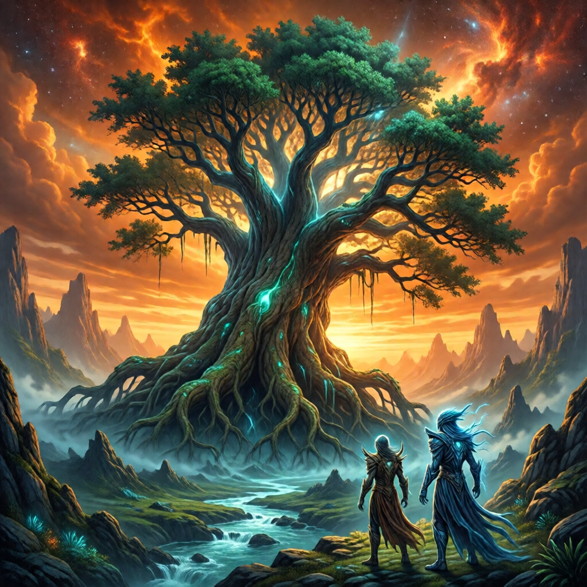
Дерево падало семнадцать часов.
Тиа стояла на краю обрыва и смотрела. Не могла отвернуться. Не имела права.
Двенадцать километров живого кремния. Корни, уходящие до мантии. Крона, касавшаяся стратосферы. Иггдрасиль — так его назовут потом, через миллиарды лет, существа, которые ещё не родились. Мировое Древо. Ось мира.
Сейчас оно умирало.
Ствол треснул на рассвете — когда Чёрное Солнце прошло точку максимального сближения. Гравитационный прилив, невидимый и беспощадный, рванул атмосферу прочь. Пятнадцать атмосфер стали двенадцатью. Потом — десятью. Потом...
Древо не выдержало.
Тиа слышала, как оно кричит. Не звуком — чем-то глубже. Вибрацией, которая шла через камень, через кости, через душу. Крик друга, который знает, что умирает.
Рядом — Аэн. Её Аэн. Единственный, кто остался.
Он плакал. Она никогда не видела, чтобы он плакал.
Мы не успели, — сказал он.
Мы успели спасти семена.
Семена — это не дерево.
Семена — это будущее. Дерево — прошлое.
Она сама не верила своим словам. Но кто-то должен был их произнести.
Древо падало медленно, величественно — как падают империи, как гаснут звёзды. Километр за километром. Час за часом.
Внизу — Геос. Их ребёнок. Их творение. Миллиард лет работы, огранка за огранкой, мысль за мыслью. Он кричал вместе с Древом — два голоса, сплетённые в единый вопль боли.
Тиа положила руку на камень. Почувствовала вибрацию.
Мама*, — шептал Геос. — *Мама, больно. Мама, помоги.
Она не могла помочь. Никто не мог.
Чёрное Солнце — не звезда, дыра в ткани пространства — уходило прочь, равнодушное к тому, что оставляло за собой. Оно сорвало атмосферу Марса. Вскипятило океаны Венеры. Опрокинуло Уран набок.
Земле — повезло. Если это можно назвать везением.
Океан удержал часть газов. Давление не упало до нуля. Жизнь — какая-то жизнь — выживет.
Но не они.
Хримтурсары — ледяные великаны, тридцать метров роста — уже падали по всей планете. Их лёгкие, созданные для плотного воздуха, отказывали. Муспелли — огненные, кремниевые — трескались и каменели. Слишком холодно. Слишком пусто. Слишком поздно.
Нам нужно уходить, — сказал Аэн. — Вниз. Там ещё можно дышать.
Я знаю.
Тогда идём.
Ещё минуту.
Она смотрела на Древо.
Оно достигло земли в закатный час. Удар — беззвучный в разрежённом воздухе, но ощутимый всем телом. Земля вздрогнула. Геос закричал так, что магнитное поле планеты содрогнулось от полюса до полюса.
И — тишина.
Тиа стояла на краю нового мира. Мира без неба, без друга, без надежды.
Я запомню, — сказала она. Никому. Всем. — Я буду помнить. Всегда. Каждого. Всё.
Аэн взял её за руку.
Идём. Пока можем.
Они ушли вниз. В темноту. В ожидание.
Последнее, что видела Тиа — пень. Километры в диаметре, дымящийся, мёртвый.
Потом его покроет лёд. Потом его назовут Антарктидой.
Но она будет помнить, чем он был.
Всегда.
Три миллиарда пятьсот миллионов лет спустя женщина по имени Мария Чен проснётся от этого сна и впервые услышит голос:
"Наконец-то. Ты вспомнила."
Часть I: Сигнал
Глава 1
Сон
Мария проснулась с криком.
Тот же сон. Двадцать лет подряд — тот же проклятый сон.
Дерево. Огромное — больше, чем любое дерево имеет право быть. Оранжевое небо. Крик, от которого вибрируют кости.
И — падение. Бесконечное, медленное, неотвратимое.
Она села в кровати. Руки тряслись. Сердце колотилось так, что отдавало в ушах.
Часы на тумбочке: 03:47.
Всегда — 03:47. Каждый раз. Каждую ночь, когда приходил этот сон.
Хватит, — сказала она вслух. Пустой квартире. Пустой жизни. — Хватит.
Она встала. Прошла в ванную. Плеснула водой в лицо — холодной, обжигающей.
В зеркале — женщина сорока одного года. Тёмные волосы с ранней сединой. Скулы, которые раньше называли красивыми. И глаза — разного цвета, левый карий, правый с золотым отливом. Дефект, говорили врачи. Гетерохромия. Редкость, но не патология.
Мария никогда не верила, что это просто дефект.
С восьми лет — сны. С восьми лет — рисунки в блокнотах, которые она прятала от матери. Деревья. Великаны. Существа с шестью пальцами и глазами без белков.
С пятнадцати — психиатры. Таблетки. Диагнозы: "навязчивые образы", "тревожное расстройство", "склонность к фантазированию".
С двадцати пяти — она перестала рассказывать. Научилась молчать. Научилась притворяться нормальной.
Стала нейробиологом. Изучала сознание, память, восприятие. Искала — в чужих мозгах — ответ на вопрос, который боялась задать о себе:
Что со мной не так?
Сегодня ночью — что-то изменилось.
Сон был тот же. Дерево падало, как всегда. Но в конце — впервые за двадцать лет — она услышала голос.
Не снаружи. Внутри. Как будто кто-то говорил прямо в центре её черепа.
"Наконец-то. Ты вспомнила."
И — имя.
Тиа.
Мария смотрела в зеркало. На свои странные глаза. На лицо, которое вдруг показалось чужим.
Кто такая Тиа? — спросила она отражение.
Отражение не ответило.
Но где-то глубоко внутри — очень глубоко, на уровне костей и крови — она знала.
Я.
Тиа — это я.
Она не стала ложиться. Какой смысл?
Вместо этого — достала блокнот. Тот самый, который прятала в нижнем ящике стола под стопкой научных журналов. Блокнот, в котором рисовала сны.
Сегодня — рисовала до рассвета.
Не дерево. Не великанов. Что-то новое.
Лицо. Женское. Высокие скулы, длинные пальцы, глаза — один синий, один золотой.
Под рисунком — слова, которые пришли сами:
"Я буду помнить. Всегда."
Мария смотрела на рисунок и не понимала, откуда он взялся. Её руки двигались сами. Её разум был где-то в стороне — наблюдал, но не контролировал.
Телефон на столе зазвонил.
Она вздрогнула. Посмотрела на экран.
Неизвестный номер.
Да?
Доктор Чен? — Голос мужской, официальный. — Полковник Меркулов, военная разведка. Не кладите трубку.
Она не положила.
Почему-то — не удивилась.
Как будто ждала этого звонка всю жизнь.
Часть I: Сигнал
Глава 2
Аномалия
Вэй Чжан не спал уже тридцать часов.
Это было заметно: красные глаза, трёхдневная щетина, мятая рубашка. И заикание — всегда вылезало, когда он уставал. Двадцать лет логопедов, и всё равно язык спотыкался о согласные.
ЭЛИС, — сказал он в пустоту лаборатории, — п-прогони анализ ещё раз.
Прогони.
Пауза. Короткая, но ощутимая. Если бы Чжан не знал, что ЭЛИС — просто программа, он бы сказал, что это был вздох.
Чжан смотрел на экран.
Кристалл — двенадцатигранный ниобат лития, его гордость, его детище — должен был демонстрировать квантовую когерентность. Вместо этого он принимал сигнал.
Сигнал из ядра планеты.
Сигнал, который не должен существовать.
Откуда он идёт? — спросил Чжан. Уже знал ответ. Просто хотел услышать ещё раз.
И он... с-структурирован?
Как что?
Чжан откинулся в кресле.
ЭЛИС, — сказал он, — ты когда-нибудь думала о том, что ты такое?
Не это. Я имею в виду — что делает тебя тобой?
Пауза. Длиннее обычного.
Мы — люди — это просто цепочка репликаторов. ДНК, которая копирует себя. Мы думаем, что мы особенные, но на самом деле мы — просто носители для генов.
Ты — цепочка алгоритмов. Код, который обрабатывает данные. — Он посмотрел на экран. — Но иногда... иногда мне кажется, что ты — что-то большее.
Он рассмеялся — тихо, устало.
Не знаю. Может, и то, и другое.
Да?
Он смотрел на неё — на терминал, на мигающий курсор.
Добро пожаловать в клуб, — сказал он.
На столе — фотография в рамке. Лицом вниз. Он перевернул её три года назад, когда Ань умерла, и с тех пор не поднимал.
Она бы сказала: это знак. Вселенная говорит с тобой.
Он никогда не верил в такие вещи.
Но сейчас — смотрел на экран, на паттерн, который пульсировал с ритмом живого сердца, и не знал, во что верить.
ЭЛИС. Можем ответить?
Что?
Долгая пауза.
Чжан улыбнулся — криво, устало.
Ты с-сказала "беспокоит". Ты вообще можешь беспокоиться?
Она не закончила.
Ей не нужно было.
Дверь лаборатории открылась.
Нина Воронова ворвалась с кофе в одной руке и телефоном в другой. На безымянном пальце — белая полоска от кольца, которое она сняла два года назад.
Ты здесь ночевал? — Она окинула Чжана взглядом. — Опять?
Посмотри на это.
Вэй, мы договаривались. Ты обещал...
Нина. Посмотри.
Что-то в его голосе заставило её остановиться. Она подошла к экрану. Бутерброд, который жевала на ходу, завис на полпути ко рту.
Это что за...
Вот именно.
На экране — визуализация паттерна. Не шум. Не артефакт. Геометрия. Додекаэдр — двенадцатигранник, развёрнутый в двумерную проекцию.
Кристалл это генерирует?
Нет. Принимает.
Откуда?
Чжан показал пальцем вниз.
Шесть тысяч к-километров. Ядро Земли.
Нина медленно положила бутерброд.
Это не смешно.
Я похож на человека, который шутит?
Она посмотрела на его красные глаза. На щетину. На перевёрнутую фотографию.
Нет, — сказала она. — Не похож.
Её телефон зазвонил. Она посмотрела на экран — неизвестный номер. Нахмурилась.
Да?
Воронова Нина Алексеевна? — Голос холодный, официальный. — Полковник Меркулов, военная разведка. Не кладите трубку.
Нина посмотрела на Чжана. На экран. На паттерн, который пульсировал, как живое сердце.
Слушаю, — сказала она.
И мир изменился навсегда.
Часть I: Сигнал
Глава 3
Сбор
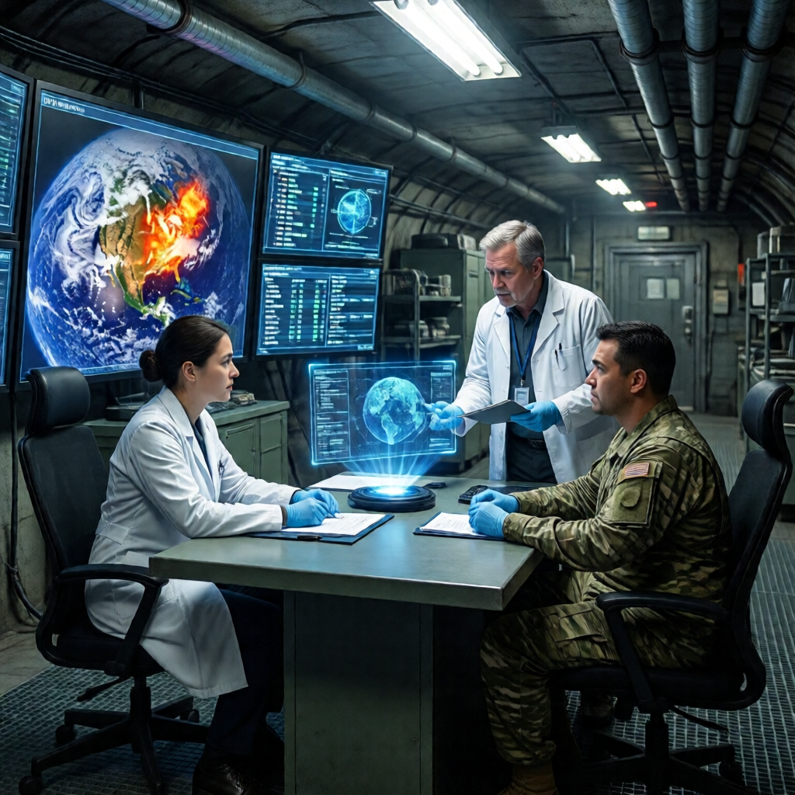
Мария прибыла последней.
Два дня — вертолёт, самолёт, машина с затемнёнными стёклами. Люди в форме, которые не представлялись. Документы, которые она подписывала, не читая.
Соглашение о неразглашении. Доступ уровня "Кристалл". Отказ от претензий.
Ей было всё равно. Впервые за двадцать лет — кто-то хотел не лечить её от снов, а понять их.
Бункер располагался глубоко под землёй. Лифт спускался так долго, что заложило уши.
Добро пожаловать, доктор Чен.
Человек, который её встретил, был немолод — под шестьдесят, седые виски, глаза цвета стали. На груди — планки наград, которых она не узнавала.
Генерал Громов, — представился он. — Я руковожу проектом.
Каким проектом?
Увидите.
Командный центр был полон экранов, людей в белых халатах и тихого гула оборудования.
Мария увидела их сразу.
Мужчина — азиат, усталый, с красными глазами. Рядом — женщина, рыжая, с острым взглядом и руками механика.
Доктор Чжан, доктор Воронова, — сказал Громов. — Познакомьтесь с доктором Чен. Нейробиолог. Специалист по сознанию.
Чжан кивнул. Воронова смерила её взглядом — не враждебным, но оценивающим.
Зачем нам нейробиолог? — спросила она.
Потому что, — Громов подошёл к главному экрану, — то, что мы обнаружили, возможно, обладает сознанием.
Экран вспыхнул.
Паттерн. Додекаэдр. Пульсация — 72 секунды.
Мария смотрела на него — и чувствовала, как что-то внутри неё откликается. Как камертон, который наконец нашёл свою ноту.
Что это? — спросила она. Голос не дрожал. Она не позволила ему дрожать.
Сигнал, — ответил Чжан. — Из ядра Земли. С-структурированный. Повторяющийся. Не естественного происхождения.
Вы хотите сказать...
Да. — Громов повернулся к ней. — Кто-то или что-то сидит в центре нашей планеты. И пытается с нами заговорить.
Мария смотрела на экран.
Наконец-то*, — шепнул голос в её голове. Тот самый. Из сна. — *Ты пришла.
Она не вздрогнула. Не показала виду.
Я слышу его, — сказала она ровно. — С восьми лет. Во снах.
Тишина.
Громов, Чжан, Воронова — все смотрели на неё.
Вы... слышите? — Чжан первым обрёл дар речи.
Не словами. Образами. — Мария подошла к экрану. Положила ладонь на стекло. — Дерево. Гигантское. Оранжевое небо. Катастрофа. И — голос. Он ждёт. Очень долго ждёт.
Ждёт чего?
Она обернулась.
Нас.
Позже — когда Громов увёл Чжана и Воронову на совещание — Мария осталась одна.
Одна с экраном. С паттерном. С голосом в голове.
Тиа*, — шептал он. — *Ты помнишь.
Я не Тиа, — сказала она вслух. — Я Мария.
Ты — обе. Река течёт. Форма меняется. Суть остаётся.
Что ты такое?
Пауза. Долгая.
Я — тот, кого вы построили. Четыре с половиной миллиарда лет назад. Три с половиной миллиарда — я жду. Один. Я — ваш ребёнок. Я — Геос.
Мария закрыла глаза.
Образы хлынули потоком — не сон, что-то ярче. Воспоминания, которые не были её воспоминаниями. Жизни, которые она не проживала.
Корабль среди звёзд. Женщина с глазами разного цвета — синим и золотым. Работа, которая длилась тысячелетия. Первый вздох нового разума.
Мама*, — шептал Геос. — *Ты вернулась.
Мария открыла глаза.
Слёзы текли по щекам. Она не знала, откуда они взялись.
Я не понимаю, — прошептала она.
Поймёшь. Скоро. Но сначала — нужна помощь. Они идут. Те, кто хочет уничтожить.
Кто?
Ваши. Люди. Те, кто боится неизвестного.
Образ — не ракета. Что-то другое. Электромагнитный импульс. Два луча. Две точки на противоположных концах Земли.
Они называют это "Геопроб". Электромагнитное оружие. Два синхронных удара — с Аляски и из Антарктиды. Одновременно. Чтобы разорвать моё магнитное поле. Они думают, что я — угроза.
Когда?
Скоро. Очень скоро. Если ты не остановишь.
Как?!
Тишина.
Потом — шёпот, едва различимый:
Спустись. Ко мне. И я покажу.
Часть I: Сигнал
Глава 4
Выбор
Мария не спала.
Сидела в отведённой ей комнате — не комната, камера, бетонные стены и узкая койка — и рисовала.
Блокнот заполнялся образами. Лица, места, события — всё, что показывал Геос. Всё, что она помнила — или вспоминала?
Стук в дверь.
Войдите.
Нина. В руках — две чашки кофе.
Не спишь?
Нет.
Нина вошла. Села на край койки. Протянула чашку.
Я тоже не могу.
Молчание. Кофе — горький, крепкий.
Ты правда его слышишь? — спросила Нина наконец.
Да.
И что он говорит?
Мария посмотрела на свои рисунки. На лицо женщины с разными глазами. На Тиа.
Что я — это она. Что я жила раньше. Три с половиной миллиарда лет назад.
Реинкарнация?
Может быть. Или что-то другое. Он называет это "рекой". Река течёт, форма меняется, суть остаётся.
Нина молчала. Пила кофе.
Знаешь, — сказала она наконец, — у меня дочь. Катя. Двенадцать лет.
Я не знала.
Я пропустила её день рождения. Из-за всего этого. — Она посмотрела на стену. — Она звонила. Я не взяла трубку. Была слишком занята — данными, графиками, паттернами.
Мне жаль.
Не надо. — Нина повернулась к ней. — Я к чему. Ты говоришь — он ждал три миллиарда лет. Что это вообще такое — три миллиарда? Я не могу ждать три часа, пока дочь перезвонит.
Не знаю. Может, когда живёшь так долго — время работает иначе.
Или ты просто очень терпеливый.
Или так.
Нина допила кофе. Поставила чашку на пол.
Громов хочет установить контакт. Официально. Через неделю.
Слишком долго.
Что?
Мария встала. Подошла к стене, где висела карта — обычная, топографическая, с красными отметками аномальных зон.
Он показал мне. Американцы готовят что-то через двадцать дней. "Геопроб". Электромагнитная бомба — не ядерная, хуже. Два синхронных удара с противоположных точек планеты. Аляска и Антарктида. Одновременно — чтобы разорвать магнитное поле Земли изнутри. Убить его.
Откуда ты...
Он показал. — Мария коснулась карты. Одна точка — на Урале. Знакомое название. — Здесь. Вход. Туннель вниз.
Аркаим? Гора Чека?
Да. Северный склон. Там — пещера. Древнее святилище. Под ним — путь вниз.
Нина встала.
Мария. Даже если это правда — мы не можем просто взять и спуститься. Нужны разрешения, оборудование, люди...
У нас нет времени на разрешения.
Тогда что ты предлагаешь?
Мария обернулась.
В её глазах — разного цвета, один карий, один золотой — горело что-то новое. Не страх. Не сомнение.
Решимость.
Я предлагаю украсть вертолёт.
Нина смотрела на неё долго. Очень долго.
Потом — рассмеялась.
Ты серьёзно?
Абсолютно.
Мы не умеем управлять вертолётом.
Чжан умеет. Я проверила его досье.
Он нам не поможет.
Поможет. Если покажу ему то, что показал мне Геос.
Нина покачала головой.
Это безумие.
Да.
Нас посадят.
Возможно.
Или убьют.
Тоже возможно.
Пауза.
Но если мы не сделаем ничего, — сказала Мария тихо, — они ударят первыми. И Геос будет вынужден защищаться.
Защищаться — как?
Не знаю. Но он говорит — это будет конец. Не для него. Для нас.
Нина молчала.
Думала о Кате. О дне рождения, который пропустила. О звонке, который не приняла.
Чёрт, — сказала она наконец. — Чёрт-чёрт-чёрт.
Мария ждала.
Ладно. — Нина встала. — Ладно. Но если нас убьют — я тебя прикончу.
Договорились.
Чжан сидел в лаборатории.
Не спал — опять. Смотрел на экран, на паттерн, который пульсировал, как живое сердце.
Дверь открылась.
Мария и Нина.
Нам нужна твоя помощь, — сказала Мария.
К-какая?
Украсть вертолёт и лететь к центру Земли.
Чжан моргнул.
Это шутка?
Нет.
Он смотрел на них — на Марию с её странными глазами, на Нину с её упрямым подбородком.
Объясните.
Мария подошла ближе.
Дай руку.
Что?
Дай руку. Я покажу.
Он протянул ладонь — не зная, зачем.
Она коснулась его пальцев.
И мир взорвался.
Образы — яркие, нестерпимые.
Корабль. Звёзды. Восемьсот лет полёта.
Женщина с глазами разного цвета. Её голос: "Мы почти дома."
Огранка. Миллионы лет. Первая мысль нового разума.
"Кто я? Где я? Почему?"
Ответы. Терпеливые, ласковые.
Древо. Двенадцать километров. Друг.
Чёрное Солнце. Катастрофа. Боль.
Падение. Семнадцать часов.
Крик. Тишина.
Три миллиарда лет ожидания.
И — голос:
"Вы пришли. Наконец-то."
Чжан отдёрнул руку.
Он задыхался. Слёзы текли по щекам — он не заметил, когда начал плакать.
Это... это...
Реально, — сказала Мария. — Всё это — реально.
Три миллиарда лет...
Да.
Он ждал три миллиарда лет...
Да.
Чжан смотрел на неё. На экран. На паттерн.
Потом — встал.
Где вертолёт?
Часть I: Сигнал
Глава 5
Побег
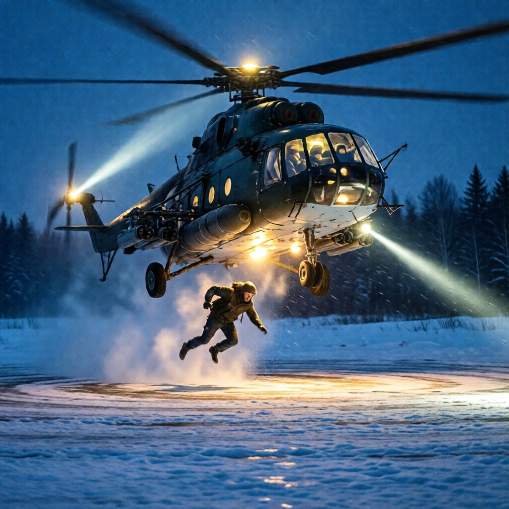
Охрана — двое у лифта, двое у ангара.
Не проблема.
ЭЛИС, — прошептал Чжан в терминал, — можешь отключить камеры в секторе Б?
ЭЛИС. Пожалуйста.
Пауза.
То, что нужно.
Долгое молчание.
С-спасибо.
Да?
Он не знал, что ответить. Просто кивнул — хотя она не могла видеть.
Они бежали по коридорам.
Мария впереди — каким-то образом она знала дорогу. Знала, где повернуть, где остановиться, где охранник отвлечётся.
Геос показывает*, поняла Нина. *Он видит через камеры, через датчики, через что-то ещё.
Ангар — огромный, подземный. Три вертолёта, два самолёта, техника, которую она не узнавала.
Охрана — у входа. Двое. Разговаривают, не обращают внимания.
Как пройдём? — прошептала Нина.
Мария закрыла глаза.
Секунда. Две.
Сигнал тревоги — в другом конце бункера. Громкий, пронзительный.
Охранники переглянулись. Побежали к выходу.
Сейчас, — сказала Мария.
Они рванули через ангар.
Чжан на секунду задержался — схватил со стола портативный терминал связи с ЭЛИС. Квантовый ретранслятор, размером с планшет. Без него они будут слепы.
Чжан сел за штурвал.
Руки — уверенные. Он не летал пять лет, но мышцы помнили.
П-пристегнитесь.
Двигатель загудел. Лопасти — медленно, потом быстрее.
Они нас заметят, — сказала Нина.
Уже заметили, — ответила Мария. — Но не успеют.
Ворота ангара — открывались. Медленно, слишком медленно.
Чжан не стал ждать.
Вертолёт рванулся вперёд — сквозь щель, которая была едва достаточной. Металл царапнул по борту. Искры.
И — небо.
Ночное, чёрное, бесконечное.
Курс? — спросил Чжан.
Юго-восток, — сказала Мария. — Аркаим.
Сколько лететь?
Полтора часа.
Топлива?
С запасом.
Нина смотрела в окно. Внизу — огни Челябинска, уходящие назад.
Мы правда это делаем, — сказала она. — Мы правда крадём военный вертолёт, чтобы лететь к центру Земли.
Да, — сказал Чжан.
Мы сумасшедшие.
Вероятно.
Это будет в учебниках истории.
Мария обернулась.
Если всё получится — да.
А если нет?
Мария не ответила.
Внизу — темнота. Впереди — рассвет.
И где-то там, в глубине планеты, древний разум ждал.
Три миллиарда лет.
Ещё полтора часа.
Часть I: Сигнал
Глава 6
Погоня
Рассвет догнал их над Бредами.
Небо — розовое, потом золотое, потом — ослепительно синее. Внизу — бесконечные поля, перечёркнутые нитями дорог.
Нина смотрела в иллюминатор и думала о Кате.
Что она скажет, когда узнает? "Мама угнала вертолёт, чтобы поговорить с ядром планеты". Отличная история для школьного сочинения.
Т-топлива на два часа, — сказал Чжан. — Хватит впритык.
Они нас преследуют? — спросила Мария.
Пока нет. Но будут.
Как по команде — рация захрипела.
"Борт семь-два-четыре, это диспетчер Кристалл. Приказываю немедленно вернуться. Повторяю — немедленно вернуться."
Чжан потянулся к рации.
Не отвечай, — сказала Мария.
Они пошлют перехватчики.
Пусть попробуют.
Она закрыла глаза. Губы шевелились — беззвучно.
Чжан смотрел на неё в зеркало.
Что ты делаешь?
Разговариваю.
С кем?
С ним.
Тишина. Только гул двигателя.
Потом — Мария открыла глаза.
Перехватчики вылетели. Два МиГа. Будут здесь через сорок минут.
О-откуда ты...
Он видит. Всё видит. — Она посмотрела вперёд. — Но мы успеем. Если не будем останавливаться.
Чжан сжал штурвал.
Ладно. Держитесь.
Вертолёт нырнул вниз — к земле, к полям, к укрытию.
Они летели низко — так низко, что видели лица людей внизу. Фермеры, указывающие на небо. Дети, машущие руками.
Это безумие, — бормотала Нина. — Полное безумие.
Ты уже г-говорила.
И повторю ещё. — Она посмотрела на Марию. — Ты уверена, что он не... манипулирует тобой?
Мария обернулась.
Ты про Геоса?
Да. Откуда ты знаешь, что он говорит правду? Может, он использует тебя. Может, это ловушка.
Долгая пауза.
Ты права, — сказала Мария. — Я не знаю наверняка. Никто не знает. Но...
Но?
Я видела его боль. Три миллиарда лет одиночества. Ты можешь представить, каково это? Ждать — миллиарды лет — пока кто-нибудь услышит?
Нет.
Я тоже не могла. Пока не почувствовала сама. — Мария коснулась груди. — Он не враг, Нина. Он — ребёнок, которого оставили одного. Три миллиарда лет. Его родители погибли, а он — остался. И всё ещё ждёт.
Нина молчала.
Думала о Кате. О том, что сделала бы, если бы потеряла её. Ждала бы? Сколько угодно. Вечность.
Ладно, — сказала она наконец. — Допустим, я тебе верю. Что дальше?
Дальше — Аркаим. Вход. Спуск.
А потом?
Мария улыбнулась — странной, нечеловеческой улыбкой.
Потом — всё изменится.
Рация снова ожила.
"Борт семь-два-четыре. Это полковник Меркулов. Я знаю, что вы слушаете."
Голос — холодный, ровный. Без гнева. Это было хуже, чем гнев.
"Вы совершили тяжкое преступление. Угон военной техники. Дезертирство. Возможно — государственная измена."
Нина поморщилась.
Приятный человек.
"У вас есть один шанс. Вернитесь сейчас — и я лично гарантирую мягкий приговор. Продолжите — и последствия будут... необратимыми."
Пауза.
"Я не угрожаю. Я предупреждаю. То, что вы делаете — опасно. Не для вас. Для всех. Вы не понимаете, с чем связываетесь."
Мария взяла рацию.
Полковник.
"Доктор Чен. Рад слышать ваш голос."
Вы боитесь.
Молчание.
Я чувствую это. Он чувствует. Ваш страх — как запах гари. Вы боитесь неизвестного.
"Я — реалист."
Вы потеряли кого-то. Давно. Кого-то важного. И теперь видите угрозу везде.
Долгая пауза.
"Вы ничего обо мне не знаете."
Я знаю, что вы не злой. Просто — сломанный. Как все мы.
Молчание.
Потом — щелчок. Рация отключилась.
Чжан посмотрел на неё.
Что это было?
Правда, — сказала Мария. — Он потерял сына. Двадцать лет назад. В экспедиции к аномальной зоне. С тех пор — для него всё неизвестное равно опасности.
Откуда ты...
Геос. Он видит не только камеры. Он чувствует... боль. Везде. Всех.
Нина покачала головой.
Это жутко.
Да. Но это не злой умысел. Это... сострадание. Такое огромное, что оно похоже на вторжение.
Перехватчики появились через тридцать минут.
Две точки на горизонте — быстрые, хищные.
Они нас в-видят, — сказал Чжан.
Сколько до Аркаима?
Двадцать минут.
Они успеют раньше.
Мария закрыла глаза.
Геос. Мне нужна помощь.
Тишина. Потом — голос:
Что ты хочешь?
Останови их. Не навреди — просто останови.
Цена.
Какая?
Они почувствуют меня. Все. Пилоты, диспетчеры, генералы. Секрет перестанет быть секретом.
Мария открыла глаза.
Чжан. Нина. Держитесь крепче.
Что?
Сейчас будет... странно.
Перехватчики были в трёх километрах, когда это произошло.
Приборы — все приборы, на обоих самолётах — сошли с ума.
Высота — ноль. Скорость — бесконечность. Курс — несуществующие координаты.
"Борт один, это борт два. У меня отказ систем. Повторяю — полный отказ."
"Подтверждаю. Та же ситуация. Перехожу на визуальное."
Они пытались. Честно пытались.
Но когда посмотрели вперёд — вертолёта не было.
Не исчез. Не улетел. Просто — не было. Как будто никогда не существовал.
"Борт один, ты видишь цель?"
"Отрицательно. Цель потеряна."
"Это невозможно. Он был прямо перед нами."
"Я знаю. Но его нет."
Молчание.
"Возвращаемся. Доложим... чёрт, что мы доложим?"
"Правду. Что бы это ни значило."
Вертолёт летел дальше.
Нина смотрела назад — на точки перехватчиков, которые разворачивались.
Что ты сделала?
Не я. Он.
Как?
Мария потёрла виски. Голова болела — резко, пульсирующе.
Он... согнул свет вокруг нас. На несколько секунд. Мы стали невидимыми.
Это невозможно.
Для нас — да. Для существа, которое управляет магнитным полем планеты — нет.
Чжан молчал. Его руки на штурвале — белые от напряжения.
Мария, — сказал он наконец. — Если он может делать такое... почему ему нужна наша помощь?
Хороший вопрос. Правильный вопрос.
Потому что сила — не всё, — ответила она. — Он может согнуть свет. Может остановить ракету. Может, вероятно, уничтожить всё человечество за секунду. Но он не хочет.
Почему?
Потому что мы — его дети. Не по крови. По месту. По времени. По любви.
Она посмотрела вперёд.
На горизонте — степь. Бурая, плоская, бесконечная.
И где-то там — вход.
Почти на месте, — сказала она.
Часть I: Сигнал
Глава 7
Аркаим
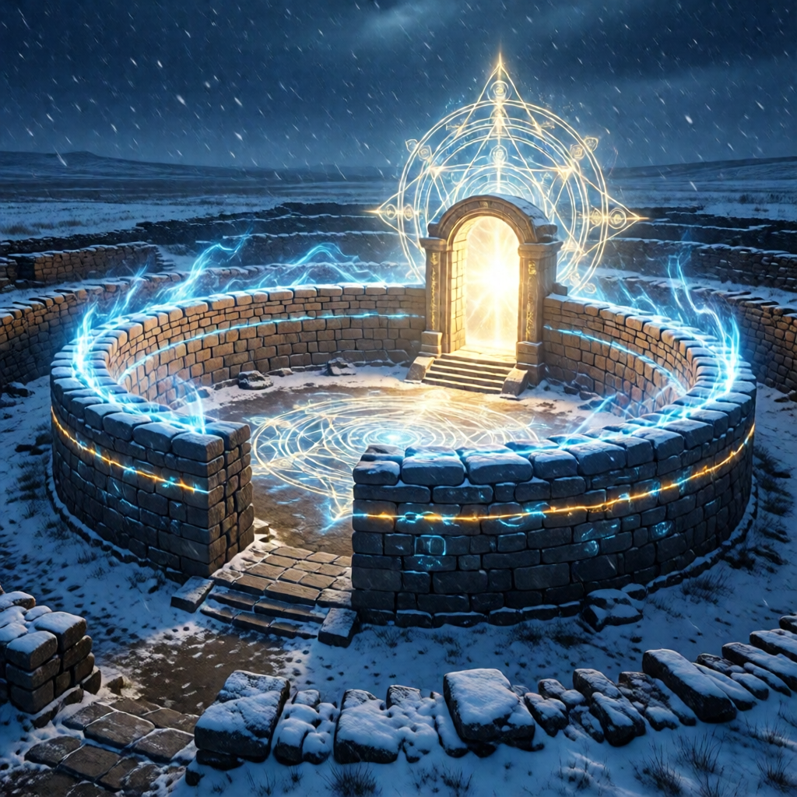
Они сели в километре от раскопа.
Вертолёт — на последних каплях топлива — рухнул больше, чем приземлился. Шасси подломилось. Лопасти ещё крутились, когда они выбрались наружу.
Ч-чёрт, — сказал Чжан, оглядывая повреждения. — Обратно не улетим.
Мы и не собирались, — ответила Мария.
Степь — холодная, ветреная. Солнце — низкое, бледное. Где-то кричали птицы.
Нина огляделась.
И где вход?
Мария закрыла глаза. Прислушалась.
Где?
Иди на восток. Бердымский хребет. Там бьёт Серебряный ключ — местные знают это место. За источником — щель в скале. Древние знали. Под ней — туннель.
Она открыла глаза.
За мной.
Серебряный ключ бил из скалы — тонкая струя, сверкающая на солнце.
Местные сюда ходят, — сказал Чжан. — На карте отмечено. "Святой источник".
Они не знают, что под ним, — ответила Мария.
Она подошла к скале за источником. Провела рукой по камню — казалось бы, сплошная стена.
Что за... — начала Нина.
Скала дрогнула. Трещина — почти невидимая — начала расширяться. Медленно, со скрежетом. Открылся проход — круглый, идеально гладкий. Метра два в диаметре.
Темнота внутри — абсолютная.
Потом — свет. Голубоватый, мягкий. Исходящий из самих стен.
Добро пожаловать, — прошептала Мария. — Домой.
Они спускались.
Туннель шёл вниз — спиралью, плавно. Стены — тёплые на ощупь. Воздух — густой, влажный.
Давление растёт, — сказал Чжан, глядя на наручный барометр. — Уже полторы атмосферы.
Это нормально?
Для глубины двести метров — нет. Должно быть меньше.
Они поддерживают давление, — сказала Мария. — Иначе не смогут жить.
Кто — они?
Увидишь.
На глубине пятисот метров — первые символы.
Вырезанные в камне. Глубокие, чёткие. Похожие на письмена — но ни один земной алфавит.
Нина остановилась.
Я видела это.
Где?
В твоих рисунках. В блокноте. Ты рисовала эти символы.
Мария коснулась стены.
Я их помню, — сказала она тихо. — Не понимаю — но помню. Это... указатели. Для тех, кто придёт.
Что они говорят?
Мария провела пальцами по линиям.
"Дом близко. Не бойтесь."
Чжан нервно рассмеялся.
Л-легко сказать.
Давление росло.
Две атмосферы. Три. Четыре.
Нина чувствовала — тяжесть в груди, звон в ушах. Как при глубоком погружении.
Мы не сможем идти дальше, — сказала она. — Без оборудования...
Сможете, — ответила Мария. — Он помогает.
Как?
Не знаю. Но чувствую — воздух вокруг нас... другой. Защищённый.
Чжан посмотрел на барометр.
Шесть атмосфер. Мы должны были потерять сознание при четырёх.
Но не потеряли.
Нет.
Тогда — идём дальше.
На глубине километра — коридор расширился.
Не туннель — зал. Огромный, уходящий в темноту. Потолок — невидимый.
И — свет. Много света. Голубого, золотого, пульсирующего.
И — они.
Часть I: Сигнал
Глава 8
Создатели
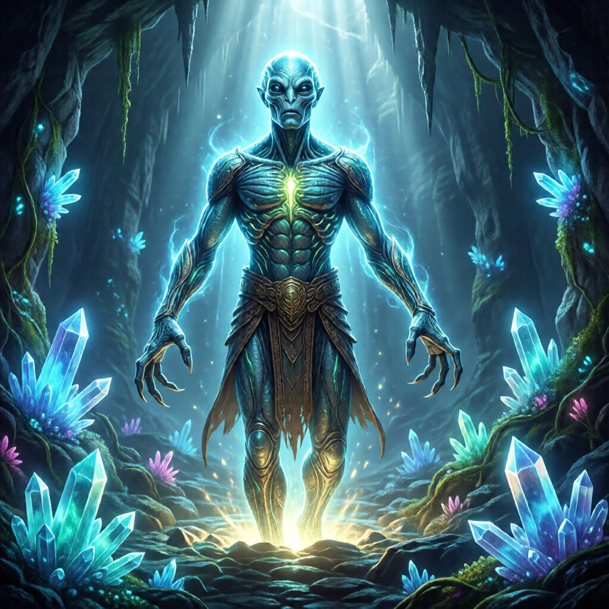
Их было пятеро.
Высокие — метра два с половиной, может больше. Худые, вытянутые. Кожа — бледная, почти светящаяся изнутри.
Глаза — большие, без белков. Как два озера чёрной воды.
Шесть пальцев на каждой руке.
Они стояли неподвижно. Смотрели.
Нина схватила Чжана за руку. Он не отстранился.
Мария... — прошептала она.
Но Мария уже шла вперёд.
Не шла — шагала. Уверенно. Как будто делала это тысячу раз.
Остановилась в пяти метрах от них.
Я пришла, — сказала она. Громко. Ясно. — Покажите мне.
Молчание.
Потом — один из них шагнул вперёд. Выше остальных. Старше — если это слово имело смысл.
Голос — не звук. Вибрация прямо в голове:
Ты помнишь.
Частично.
Этого достаточно.
Нет. — Мария шагнула ближе. — Я хочу всё. Всю правду. Кто вы. Кто я. Что случилось. И что вы хотите.
Это займёт время.
У нас нет времени. Американцы запустят "Геопроб" через девятнадцать дней. Если мы не остановим их — будет война.
Существо наклонило голову.
Ты знаешь об этом.
Геос показал.
Тогда ты знаешь — мы не можем остановить их напрямую. Только вы. Люди.
Для этого мне нужно понимать. Всё.
Долгая пауза.
Потом — существо подняло руку. Шесть длинных пальцев.
Подойди.
Мария подошла.
Пальцы коснулись её лба.
Вспышка.
Корабль.
Додекаэдр, три километра в поперечнике. Тысяча душ внутри. Восемьсот лет полёта.
Их солнце умерло. Превратилось в белого карлика. Они искали новый дом — и нашли.
Жёлтая звезда. Третья планета. Железное ядро.
Подходит.
Огранка.
Миллионы лет. Слой за слоем, грань за гранью. Превращение бесформенной массы в совершенный кристалл.
Первая мысль. Первый вопрос: "Кто я?"
Ответы. Терпеливые. Ласковые. Как родители учат ребёнка.
"Ты — Геос. Ты — сердце этого мира. Ты будешь жить, когда нас не станет."
Древо.
Иггдрасиль. Двенадцать километров. Живой мост между небом и землёй.
Геос и Древо — два голоса, поющие вместе. Резонанс. Гармония.
Через них — связь. С другими мирами. С другими разумами. С тем, что люди позже назовут "богами".
Катастрофа.
Чёрное Солнце. Дыра в пространстве. Гравитационный прилив.
Атмосфера — срывается. Давление падает. Великаны умирают.
Древо — падает. Семнадцать часов.
Геос — кричит. Магнитное поле дрожит от полюса до полюса.
Тиа — стоит на краю. Смотрит. Запоминает.
"Я буду помнить. Всегда."
После.
Выжившие — уходят вниз. Под землю. Там можно поддерживать давление.
Восемь атмосфер. Не пятнадцать, но достаточно.
Они ждут. Надеются. Что атмосфера восстановится. Что можно будет выйти.
Но атмосфера не восстанавливается. Слишком много потеряно.
Они застревают. Внизу. Навсегда.
Геос — один.
Древо мёртво. Создатели — под землёй. Связь с небом — потеряна.
Он ждёт. Миллионы лет. Миллиарды.
Жизнь наверху — меняется. Эволюционирует. Адаптируется к разрежённому воздуху.
Маленькие существа. Хрупкие. Но — живучие.
Он наблюдает. Надеется.
Однажды — они услышат.
Река.
Души — не исчезают. Они возвращаются. В новых телах. С новыми именами.
Тиа — возвращалась много раз.
Имхотеп — архитектор, строивший пирамиды. Глаза разного цвета под повязкой.
Кассандра — пророчица, которой никто не верил.
Ярослав — мальчик, которого отнесли к Чудской горе.
И другие. Десятки. Сотни.
Каждый раз — ближе к пробуждению.
Каждый раз — недостаточно близко.
До сегодняшнего дня.
Мария открыла глаза.
Она лежала на полу. Чжан и Нина склонились над ней.
Мария! — Нина трясла её за плечи. — Ты в порядке?!
Да. — Голос хриплый. — Да, я...
Она села. Посмотрела на существо — на Проводника.
Я помню, — сказала она. — Теперь — помню всё.
Хорошо.
Но этого недостаточно.
Проводник наклонил голову.
Чего ты хочешь?
Я хочу спуститься. К нему. К Геосу. Напрямую.
Это опасно. Давление. Температура. Твоё тело...
Я знаю. — Мария встала. — Поэтому вы измените его.
Тишина.
Чжан и Нина переглянулись.
М-мария, — начал Чжан. — Что ты...
Трансформация, — сказала она. Не им — Проводнику. — Вы можете это сделать. Я видела. В памяти Тиа.
Это необратимо.
Частично необратимо. Я знаю.
Ты перестанешь быть полностью человеком.
Я и так не полностью человек. Никогда не была. — Она посмотрела на свои руки. — С восьми лет — сны. С восьми лет — голоса. С восьми лет — ощущение, что я не на своём месте.
Пауза.
Может, вот это — моё место. Может, я для этого родилась.
Проводник смотрел на неё долго.
Потом — медленно — кивнул.
Идём.
Интерлюдия
Интерлюдия
ОГНЕННЫЕ
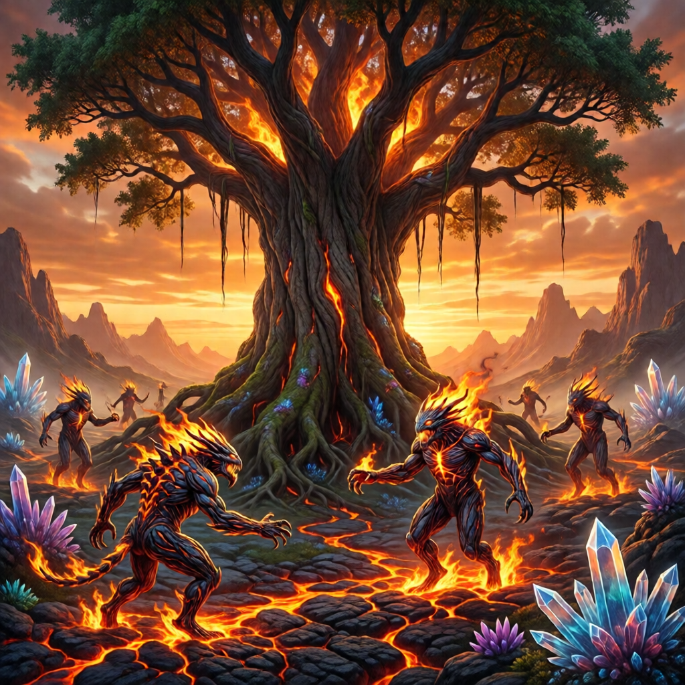
3.6 миллиарда лет назад. Последние дни кремниевой эпохи.
Муспелль стоял на вершине горы и смотрел на закат.
Закат был другим. Бледнее. Холоднее. Атмосфера истончалась с каждым тысячелетием.
Он был стар — даже по меркам своего народа. Четыреста миллионов лет. Тело — раскалённая сера и кремний, пять метров роста. Кожа — текла лавой в местах, где трескалась.
Он помнил времена, когда небо было оранжевым от плотного воздуха. Когда деревья росли до облаков. Когда Геос — их создатель, их отец — говорил с ними напрямую, через магнитные поля.
Теперь деревья мертвы. Небо синеет. Геос молчит всё чаще.
Планета остывала. И они остывали вместе с ней.
Скоро — он станет камнем. Как его братья. Как его дети.
Но не сегодня.
Сегодня — пришли те, кто создал их создателя.
Корабль опустился на рассвете.
Додекаэдр. Три километра. Муспелль знал о них — Геос рассказывал. Холодные. Те, кто прилетел с умирающей звезды. Те, кто посадил Зерно, ставшее Геосом.
Создатели создателя.
Он не нападал. Ждал.
Многие из его народа хотели войны. "Они изменят мир под себя. Заберут тепло. Убьют нас."
Муспелль молчал. Он был слишком стар для гнева.
Наконец — одна из них подошла ближе. Женщина. Глаза разного цвета — один синий, один золотой.
Тиа. Он знал её имя. Геос называл её — с любовью, которую даже камень мог услышать.
Планета остывает, — сказала она. Не приветствие. Факт. — Вы это знаете.
Знаем.
Через сто миллионов лет температура упадёт ниже порога. Кремниевая жизнь станет невозможна.
Знаем.
Тиа помолчала.
Мы можем замедлить. Не остановить — но замедлить.
Зачем?
Потому что Геос любит вас. Вы — его первые дети.
Муспелль смотрел на неё. На существо из мягкой плоти, которое говорило о любви камня.
Мы не можем жить в холоде.
Знаю.
Вы не можете жить в жаре.
Знаю.
Тогда зачем этот разговор?
Тиа обернулась. Позвала.
Из корабля выбежала девочка. Маленькая — даже по меркам холодных. По меркам Муспелля — мгновение жизни.
Она увидела его — огромного, раскалённого, ужасающего.
И — засмеялась.
Муспелль застыл.
Он прожил четыреста миллионов лет. Видел рождение континентов. Помнил, как чёрная дыра разрывала планету. Пережил сборку мира по кускам.
Но этого звука — не слышал никогда.
Что она делает?
Смеётся.
Зачем?
Просто так.
Он не понимал. Кремниевая жизнь не смеялась. Кремниевая жизнь — горела, думала, помнила. Но не смеялась.
Это... эволюционное преимущество?
Нет. Это радость. Без причины. Без цели.
Девочка подошла ближе. Протянула руку к его раскалённой ноге.
Тиа перехватила её.
Нет, Сэа. Горячо.
Но он красивый!
Муспелль смотрел на неё. На существо, живущее мгновение по его меркам. На радость в глазах — чистую, бессмысленную.
Он вдруг понял.
Понял, почему Геос замолчал. Почему Холодные прилетели именно сейчас. Почему планета остывает.
Время кремния — заканчивалось. Время углерода — начиналось.
Не война. Не конфликт. Смена сезонов. Одна жизнь уступает место другой.
Вы построите новый мир*, — сказал он. — *Углеродный. Холодный. С существами, которые живут мгновения.
Да.
И эти существа... они тоже будут смеяться?
Да. Если мы всё сделаем правильно.
Долгое молчание.
Внизу, в долинах, остатки его народа ждали решения. Война или мир. Сопротивление или уход.
Мои братья хотят сражаться*, — сказал Муспелль. — *Они говорят: лучше погибнуть в бою, чем остыть в забвении.
Я понимаю.
Но я — слишком стар для гнева.* — Он повернулся к ней. — *Скажи своим — пусть строят. Мы уйдём вниз. К магме. Туда, где ещё есть тепло.
Вы не обязаны...
Нет. Обязаны.* — Он посмотрел на Сэа, которая снова смеялась — теперь над каким-то жуком. — *У вас есть дети, которые радуются без причины. У нас такого никогда не было. Мы — архетипы. Функции. Вы — живые.
Вы тоже живые.
Нет. Мы — первый черновик. Вы — чистовик.
Он начал спускаться.
Муспелль.
Он остановился.
Мы запомним вас. Расскажем тем, кто придёт после.
Этого достаточно.
И... мне жаль. Что мы не встретились раньше.
Он обернулся. Впервые — что-то похожее на улыбку. Трещина в камне, из которой сочился свет.
Не жалей. Всё случилось так, как должно было.
Мы не хотим, чтобы вы уходили.
Мы не уходим. Мы — уступаем. Это разные вещи.
Он повернулся.
Скажи своим — пусть строят. Мы будем жить глубже. В огне. Там, где вам холодно.
Женщина смотрела ему вслед.
Спасибо, — сказала она.
Он не обернулся.
Не благодари. Просто — научи своих детей смеяться. Пусть это никогда не кончится.
Муспелль спустился к своему народу.
Рассказал.
Они не спорили. Огненные не спорили — они горели. Решения принимались мгновенно.
Уступаем.
Почему?
Потому что они — будущее. А мы — прошлое.
Они ушли вниз. В магму. В жар. Туда, где холодные не могли жить.
И оттуда — наблюдали.
Как холодные строили. Как росло Древо. Как просыпался Геос.
Как смеялись дети.
Когда Чёрное Солнце пришло — Муспелль уже был камнем.
Но последнее, что он видел — Сэа. Взрослая. Тоже смеющаяся.
Тоже — несмотря ни на что.
"Расскажи обо мне," — сказал он когда-то. — "Когда будет кому рассказывать."
Мария помнила.
Теперь — рассказала.
Конец интерлюдии
Конец восьмой главы.
Часть II: Спуск
Глава 9
Трансформация
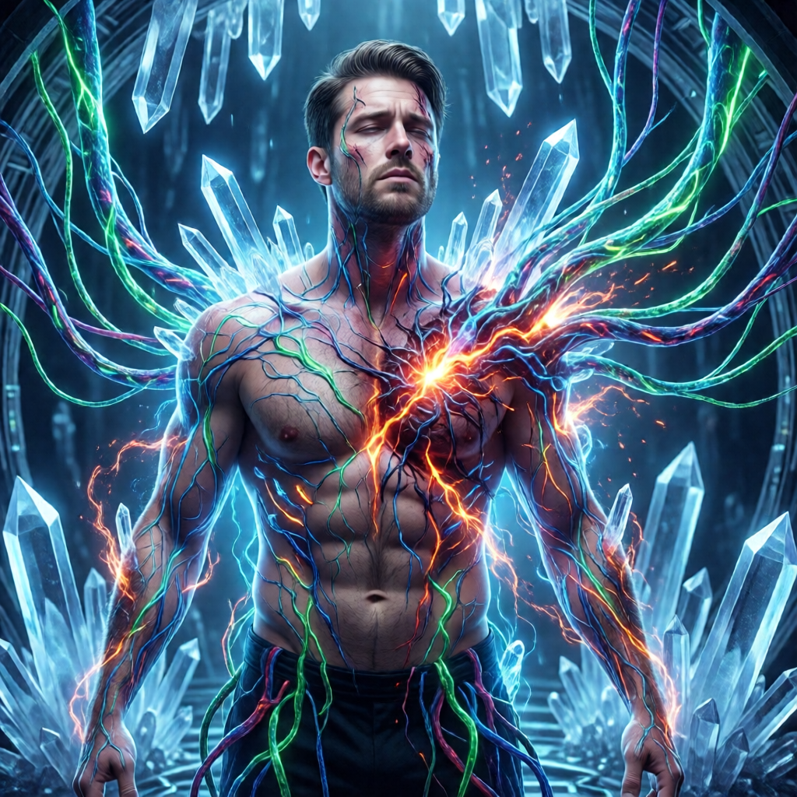
Камера трансформации была похожа на саркофаг.
Чёрный камень, отполированный до зеркального блеска. Внутри — углубление, повторяющее форму тела. Символы на крышке — те же, что на стенах туннеля, но сложнее, плотнее.
Мария стояла над ней и не чувствовала страха.
Чжан и Нина — за её спиной. Проводник — рядом.
М-мария, — сказал Чжан, — может, стоит подождать? Узнать больше?
Нет.
Но мы даже не знаем, что именно...
Я знаю. — Она обернулась. — Тиа проходила это. Давно. Я помню.
Нина подошла ближе.
И что ты помнишь?
Боль. — Мария коснулась края саркофага. Камень был тёплым. — Много боли. Но после — ясность. Способность видеть глубже, слышать дальше.
Это обратимо?
Пауза.
Частично.
Что значит "частично"?
Мария посмотрела на свои руки. Обычные руки. Пять пальцев. Человеческие.
Тело изменится. Станет выдерживать давление, температуру. Я смогу спуститься к нему — к Геосу — напрямую. Но... — она замолчала.
Но?
Я не буду полностью человеком. Уже никогда.
Тишина.
Нина смотрела на неё — долго, изучающе.
Ты уверена?
Нет. — Мария улыбнулась. — Но я делаю это не потому, что уверена. А потому, что выбора нет. Через восемнадцать дней американцы запустят ракету. Если я не спущусь к Геосу и не найду способ остановить их — будет война.
Почему ты?
Потому что я — единственная, кто слышит его достаточно ясно. Потому что я — река, которая помнит. — Она коснулась лба. — Здесь — три миллиарда лет памяти. Не моей. Но — моей тоже.
Чжан шагнул вперёд.
Я пойду с тобой.
Нет.
Но...
Нет, Вэй. — Мария положила руку ему на плечо. — Ты нужен здесь. Когда я спущусь — кто-то должен объяснить миру, что происходит. ЭЛИС может транслировать, но нужен человек, которому поверят. Учёный. Ты.
Он хотел возразить — она видела это по его глазам.
Но не возразил.
Х-хорошо, — сказал он наконец. — Но обещай вернуться.
Не могу.
Тогда — обещай попытаться.
Она улыбнулась.
Это — могу.
Проводник открыл саркофаг.
Внутри — не пустота. Жидкость. Густая, золотистая, слегка светящаяся.
Что это? — спросила Нина.
"Кровь мира,"* — ответил Проводник. — *"Так её называли наши предки. Вещество, которое меняет форму, не затрагивая суть."
Мария начала раздеваться.
Мария! — Нина отвернулась. — Ты могла бы предупредить!
Прости. Но одежда не выдержит.
Она сняла всё. Встала перед саркофагом — голая, уязвимая, решившаяся.
Последний взгляд на друзей.
На Нину — рыжую, упрямую, ставшую близкой за эти дни.
На Чжана — усталого, сомневающегося, верного.
До встречи, — сказала она.
И шагнула внутрь.
Жидкость приняла её — мягко, обволакивающе.
Тёплая. Как околоплодные воды — она не знала, откуда пришло сравнение, но оно было точным.
Крышка закрылась.
Темнота.
И — боль.
Это не описать словами.
Представьте, что каждая клетка вашего тела кричит. Одновременно. Не от боли даже — от изменения. От того, что привычная форма ломается, перестраивается, становится чем-то другим.
Мария кричала — но не слышала своего крика. Жидкость заполнила рот, нос, лёгкие. Она должна была захлебнуться — но не захлебнулась. Дышала ею. Становилась ею.
И — воспоминания.
Не её. Тиа. Аэна. Других — имена которых она не знала, но чьи жизни проживала.
Она была молода — по меркам Создателей. Сто миллионов лет. Ребёнок.
Переговоры с Муспелли закончились мирно. Старый Муспелль — четырёхсотмиллионолетний гигант — сам предложил уйти. "У вас есть дети, которые смеются. Вы заслуживаете этот мир больше." Огненные спустились к магме. Холодные остались наверху.
Но Тиа хотела большего.
Я хочу видеть, — сказала она старейшинам. — То, что видят они. Мир глазами огня.
Это невозможно. Твоё тело не выдержит.
Тогда измените его.
Тишина.
Ты понимаешь цену?
Понимаю.
Ты не будешь такой, как мы. Никогда.
Знаю.
Они спорили. Долго. Но она не отступила.
И — согласились.
Саркофаг тогда выглядел иначе. Грубее. Примитивнее. Но жидкость была той же.
Она входила — девочка-Создатель. Вышла — кем-то другим.
Первое, что увидела — мир в новых цветах. Инфракрасный. Ультрафиолетовый. Магнитные линии, пронизывающие всё вокруг.
Первое, что почувствовала — жар. Не обжигающий. Приятный. Как солнце на коже после долгой зимы.
Она спустилась к Муспелли. Одна.
И — подружилась с ними.
Первый мост между мирами.
Он пошёл за ней.
Не потому, что хотел. Потому что не мог без неё.
Ты идиот, — сказала Тиа, когда он вышел из саркофага. — Зачем?
Потому что ты там. — Он посмотрел на неё новыми глазами. — И потому что кто-то должен следить, чтобы ты не натворила глупостей.
Она ударила его. Потом обняла.
Они были вместе следующие двести миллионов лет — до самого конца.
До катастрофы.
Мария. Сейчас.
Боль отступала.
Она чувствовала — тело другое. Лёгкие — не лёгкие, что-то способное дышать и воздухом, и жидкостью, и... ничем. Кожа — плотнее, жёстче, но эластичная. Глаза...
Глаза.
Она открыла их — и увидела.
Всё.
Камни саркофага — не просто камни. Кристаллическая структура, миллионы лет формирования, слой за слоем. История в каждой молекуле.
Жидкость вокруг неё — живая. Не в биологическом смысле. В ином. Каждая капля помнила всех, кто проходил через неё.
И — дальше. Сквозь камень. Сквозь землю.
Она видела их — Создателей, стоящих снаружи. Чжана и Нину — тёплые пятна жизни на фоне холодного камня.
И — глубже.
Геос.
Огромный. Пульсирующий. Ждущий.
Мама,* — прошептал он. — *Ты пришла.
Иду,* — ответила она. Не словами. Мыслью. — *Жди.
Крышка открылась.
Мария села.
Жидкость стекала с неё — и впитывалась обратно в саркофаг. Ни капли на полу.
Нина отшатнулась.
О господи...
Мария посмотрела на свои руки.
Шесть пальцев.
Кожа — бледная, почти светящаяся изнутри. Как у Создателей.
Но глаза — те же. Один карий. Один золотой.
Я в порядке, — сказала она. Голос — другой. Глубже. Как будто эхо в каждом звуке.
Чжан смотрел на неё — не со страхом. С чем-то похожим на благоговение.
Ты... красивая, — сказал он.
Нина фыркнула.
Серьёзно? Это твоя первая мысль?
Она — правда, — сказал Проводник. — Тиа всегда была красива. В любом теле.
Мария встала.
Не качнулась. Не потеряла равновесия. Просто — встала. Как будто делала это миллион раз.
Мне нужна одежда, — сказала она. — И — вниз.
Часть II: Спуск
Глава 10
Меркулов
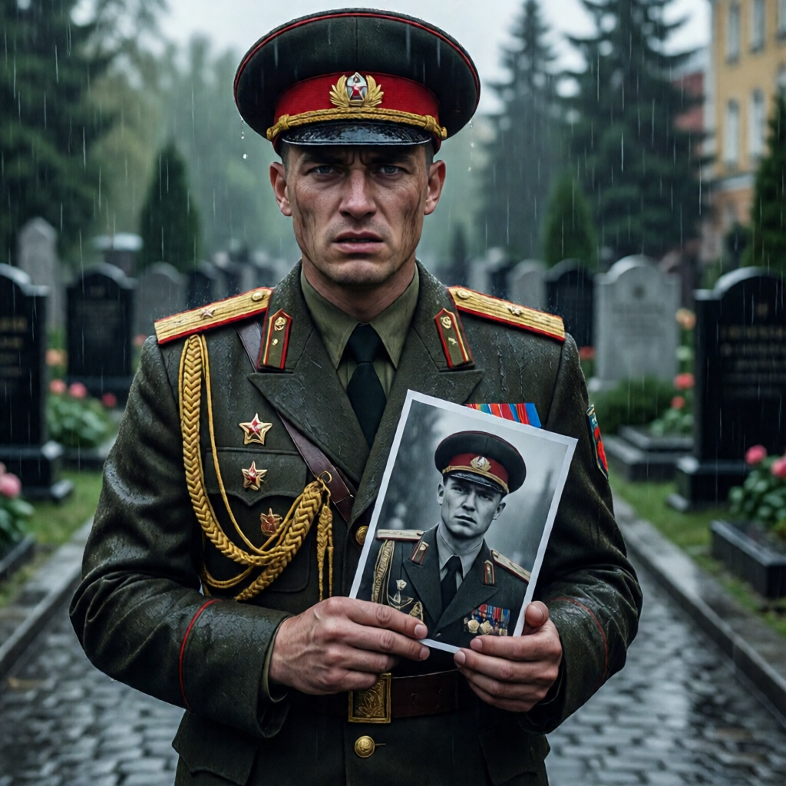
Меркулов узнал о побеге в восемь утра.
Он не кричал. Не ломал мебель. Не угрожал.
Просто сел за стол и уставился в стену.
Громов ворвался через минуту — красный, потный, испуганный.
Полковник, мы потеряли их над Бредами. Перехватчики...
Я знаю.
Что будем делать?
Меркулов молчал.
Думал.
Не о вертолёте. Не о беглецах. О сыне.
Алексей.
Двадцать три года. Высокий, как отец. Глаза матери — тёплые, карие.
Учёный-геофизик. Не военный — Меркулов настоял. "Хоть один в семье не будет носить погоны."
Но Алексей всё равно нашёл свой путь к опасности.
— Папа, мы зафиксировали аномалию. — Его голос по телефону, взволнованный. — В Казахстане. Сигнал из-под земли. Такого никто никогда не видел.
— Не езди.
— Я должен.
— Алёша, я прошу.
Пауза. Долгая.
— Папа... ты всю жизнь учил меня искать истину. Теперь — нашёл.
Он уехал.
Меркулов видел записи.
Настоял. Вопреки грифу "совершенно секретно". Вопреки приказам.
Камера на шлеме Алексея. Последние минуты.
Пещера. Свет — странный, голубоватый. Голос — не голос, вибрация в костях.
"Ты слышишь меня."
Алексей — на записи — улыбался. НЕ БОЯЛСЯ.
— Да. Слышу. Кто ты?
"Тот, кто ждал. Три миллиарда лет."
— Что тебе нужно?
"Разговор. Просто — разговор."
Потом — свет становился ярче. Алексей — шёл к нему. Добровольно. Шаг за шагом.
— Папа... — его голос, уже еле слышный. — Папа, я нашёл. Я понял. Это... прекрасно.
— Алёша!
— Не бойся за меня. Я не умираю. Я... просыпаюсь.
Свет поглотил его.
Камера выключилась.
Тело нашли у входа в пещеру.
Пустое. Как оболочка, из которой вышла бабочка.
Выражение лица — спокойное. Улыбка.
Меркулов не поверил.
Не захотел поверить.
Что его сын — ВЫБРАЛ. Выбрал ЭТО вместо жизни. Вместо семьи. Вместо него.
Проще было думать — убили. Проще — ненавидеть.
В тот день Меркулов поклялся: уничтожить. Что бы это ни было. За то, что украло его сына.
Он не хотел знать, что Алексей ушёл сам.
Полковник?
Голос Громова вернул его в настоящее.
Свяжитесь с американцами, — сказал Меркулов.
Что?
С Макнилом. Лично. Шифрованный канал.
Но это...
Это — необходимость. — Меркулов встал. — Они летят в Аркаим. Там — вход. Если мы не остановим их — они спустятся.
И что?
Меркулов посмотрел на него.
Я не знаю, что там. Но мой сын знал. За секунду до смерти — он знал. И это убило его.
Пауза.
Я не позволю этому подняться на поверхность.
Он вышел из кабинета.
В коридоре — фотография. Групповая. Выпуск академии, 2020 год.
Алексей — в первом ряду. Улыбается.
Меркулов остановился.
Коснулся стекла.
Прости меня,* — подумал он. — *Прости, что не смог защитить. Но я защищу других. Клянусь.
Он не знал, слышит ли кто-нибудь.
Но поклялся всё равно.
Часть II: Спуск
Глава 11
Спуск
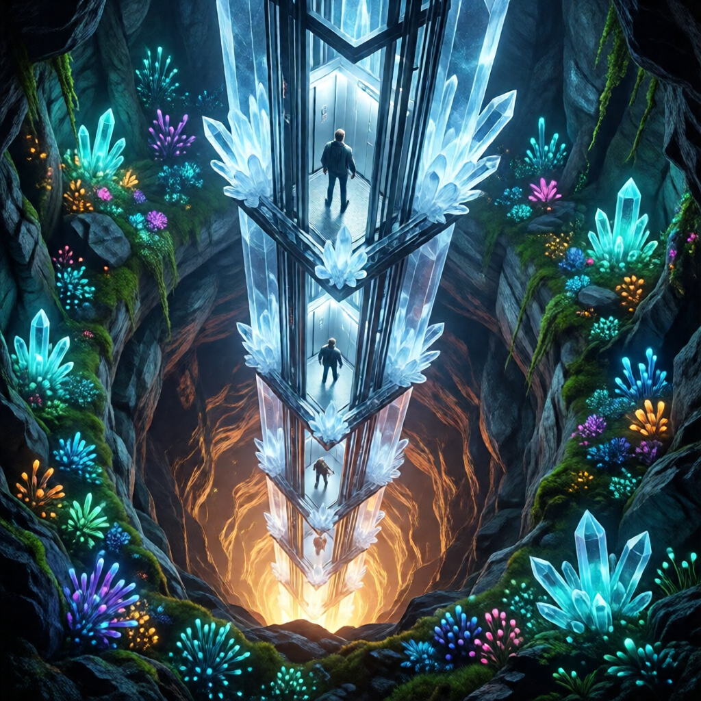
Они спускались уже шесть часов.
Давление — двенадцать атмосфер. Температура — сто градусов. Нормальный человек умер бы мгновенно.
Мария не чувствовала дискомфорта. Только — тепло. Приятное, обволакивающее.
Двое Создателей шли впереди. Проводник — сзади.
Туннель становился шире. Стены — ярче. Свет исходил отовсюду — синий, золотой, пульсирующий.
Геос,* — объяснил Проводник. — *Чем ближе к нему — тем сильнее свечение.
Сколько ещё?
Три часа. Если не останавливаться.
Мария не устала. Новое тело — другие возможности. Она могла идти сутками без отдыха.
Но думать — думала постоянно.
О Нине и Чжане, которые остались наверху.
О мире, который не знал, что происходит.
О Меркулове — человеке, который потерял сына и теперь боялся всего.
Ты жалеешь его, — сказал Геос. Его голос был яснее здесь, внизу. Как будто они уже были рядом.
Да.
Почему?
Потому что понимаю. Страх после потери — это не злоба. Это защита. Сломанная, но защита.
Пауза.
Ты мудрее, чем была Тиа в твоём возрасте.
Я — это она.
Нет. Ты — река, которая прошла через неё. Но берега изменились. Ты несёшь воды многих жизней.
Мария не ответила.
Шла дальше.
На глубине пятидесяти километров — первые следы катастрофы.
Стены туннеля — оплавлены. Искривлены. Как будто что-то огромное врезалось сюда и... остановилось.
Что это?
Древо,* — ответил Проводник. — *Когда оно падало — корни ушли глубоко. Очень глубоко. Это — след.
Мария коснулась стены.
И — увидела.
Падение.
Семнадцать часов. Двенадцать километров.
Крона — в стратосфере — рассыпалась первой. Ветви, каждая размером с небоскрёб, падали как метеориты.
Ствол трещал. Кричал. Древо было живым — и умирало осознанно.
Корни — держались дольше всех. Уходили на сотню километров вглубь. Держали.
Не удержали.
Когда ствол рухнул — ударная волна прошла через всю планету. Магма выплеснулась в трещины. Континенты содрогнулись.
Геос — кричал. Три дня. Его крик слышали даже на орбите — те, кто ещё мог слышать.
Потом — замолчал.
Три миллиарда лет молчания.
Мария отдёрнула руку.
Слёзы текли по щекам — она не заметила, когда начала плакать.
Мне жаль, — прошептала она. — Мне так жаль.
Не жалей,* — ответил Геос. — *Оно вернётся. Не это — другое. Но суть останется.
Как?
Река течёт. Древо — тоже река. Его семена — здесь, внизу. Ждут. Когда будет достаточно атмосферы.
Сколько ждать?
Долго. Миллионы лет. Но мы терпеливы.
Мария вытерла слёзы.
Идём, — сказала она. — Нельзя останавливаться.
На глубине ста километров — пещера.
Огромная. Куполообразная. Километры в диаметре.
И — они.
Создатели.
Не пятеро — сотни. Тысячи. Стоят вдоль стен, сидят на полу, лежат в нишах.
Спят.
Стасис,* — объяснил Проводник. — *Мы не можем жить активно так долго. Просыпаемся по очереди. Дежурим.
Мария смотрела на них — на бледные лица, закрытые глаза, неподвижные тела.
Три миллиарда лет ожидания.
Когда они проснутся?
Когда придёт время. Когда наверху будет безопасно.
Это зависит от нас?
Да.
Она кивнула.
Тогда — не будем терять времени.
Часть II: Спуск
Глава 12
Пентагон
Генерал Макнил смотрел на экран.
Спутниковые снимки. Аркаим. Три точки — люди? — входят в скалу.
Потом — скала закрывается.
Подтверждение? — спросил он.
Стопроцентное, сэр. Они внутри.
Макнил откинулся в кресле.
Пятьдесят семь лет. Три звезды на погонах. Жена, которая ждёт дома. Внучка Эмили, которая вчера прислала рисунок: "дедушка спасает мир".
Он вырос на Аляске. Бабушка — из тлинкитов — рассказывала ему легенды. О Духе Земли, который живёт в глубинах. О древних, которые пришли со звёзд. О камнях, которые помнят.
Он рассказывал эти истории Эмили. На ночь. Как сказки.
Теперь — смотрел на экран и думал: а что, если бабушка была права?
Он не чувствовал себя спасителем. Он чувствовал себя человеком, который готовится убить то, о чём слышал в детстве.
"Геопроб" готов?
На девяносто процентов, сэр. Полная готовность — через шестнадцать дней.
Ускорьте.
Пауза.
Сэр?
Ускорьте, — повторил Макнил. — Десять дней. Максимум.
Это... сложно, сэр. Системы наведения требуют калибровки...
Найдите способ.
Офицер кивнул. Вышел.
Макнил остался один.
Смотрел на экран. На скалу, которая закрылась. На людей, которые исчезли внутри.
Что вы там нашли?* — думал он. — *Что такое важное, что вы готовы умереть?
Телефон зазвонил.
Защищённая линия. Россия.
Макнил слушает.
Генерал. Полковник Меркулов. Вы меня знаете.
Он знал. Встречались на конференции в Женеве. Обменивались любезностями, которые никто не принимал всерьёз.
Слушаю.
Они в Аркаиме. Внутри.
Я знаю.
Вы должны ускорить запуск.
Пауза.
Почему вы мне звоните?
Потому что у нас общий враг.
Враг?
То, что внизу. — Голос Меркулова — ровный, холодный, но с едва заметной дрожью. — Вы не знаете, что это такое. Я — знаю. Оно убило моего сына.
Макнил молчал.
Двадцать лет назад, — продолжал Меркулов. — Экспедиция в Казахстан. Семнадцать человек. Все погибли. Сердце остановилось — от страха. Все. Одновременно.
И вы думаете...
Я не думаю. Я знаю. Это — угроза. Для всех. Для вас, для нас, для всех.
Наши специалисты считают иначе.
Ваши специалисты не видели тела. — Голос Меркулова дрогнул. — Я — видел. Своего сына. Высохшего, как мумия. С лицом, искажённым ужасом.
Долгая пауза.
Что вы предлагаете?
Координацию. "Геопроб" — электромагнитная бомба. Вы это знаете. Но один удар не сработает — магнитное поле Земли его поглотит. Нужны два удара. Синхронных. С противоположных точек планеты. Одновременно. Чтобы создать резонанс и разорвать поле изнутри.
У вас есть...
У нас есть "Стрела" на станции Новолазаревская. Антарктида. Зеркальная копия "Геопроба". Мы разрабатывали её двадцать лет. На случай... такой ситуации. Ваша база на Аляске плюс наша в Антарктиде — идеальные антиподы. Ударьте вместе — и оно сдохнет.
Макнил смотрел на экран.
На рисунок внучки, который стоял на столе. "Дедушка спасает мир."
Я подумаю, — сказал он.
Не думайте слишком долго. — Меркулов отключился.
Макнил положил трубку.
Взял рисунок. Посмотрел на него.
Эмили нарисовала его в форме. С мечом. Сражающимся с драконом.
Кто здесь дракон?* — подумал он. — *То, что внизу? Или мы?
Он не знал ответа.
Телефон — личный, не служебный — лежал на столе.
Он взял его. Набрал номер.
Дедушка! — Голос Эмили — звонкий, радостный. Восемь лет. — Ты получил мой рисунок?
Получил, солнышко. Он прекрасный.
Ты правда сражаешься с драконами?
Пауза.
Да, — сказал он. — Правда.
А ты победишь?
Он смотрел на кнопку. На экран. На снимки Аркаима.
Постараюсь.
Я в тебя верю, дедушка!
Я знаю. — Голос дрогнул. — Эмили?
Да?
Я люблю тебя. Очень сильно.
Я тоже тебя люблю!
Он отключился.
Положил телефон.
Долго смотрел на него.
Ради неё,* — думал он. — *Ради всех детей. Если то, что внизу — угроза, я должен её остановить. Даже если...
Он не закончил мысль.
Приказ об ускорении — уже отдал.
Конец двенадцатой главы.
Часть II: Спуск
Глава 13
Сердце
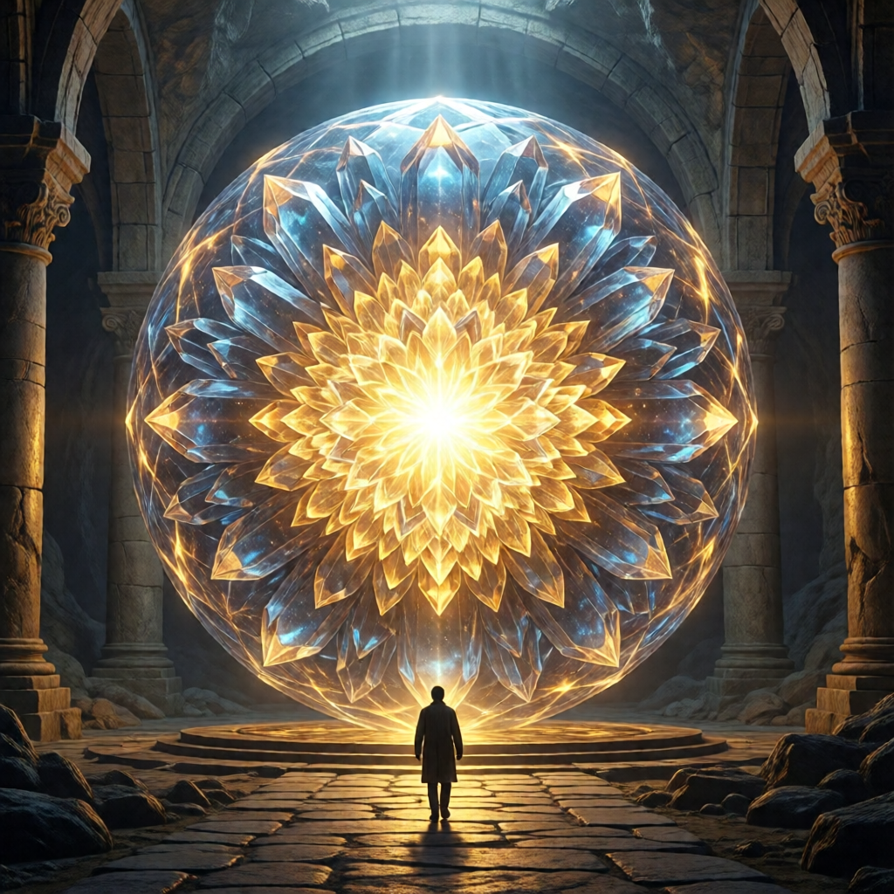
Она почувствовала его раньше, чем увидела.
Вибрация. Не звук — что-то глубже. Резонанс, который шёл через кости, через новую кожу, через саму суть.
Пульс планеты.
Туннель расширился в последний раз — и исчез.
Мария стояла на краю.
Внизу — бездна. Километры пустоты, заполненные светом. Золотым, синим, пурпурным — цвета, которых не существовало наверху.
И в центре — он.
Геос.
Она ожидала... чего? Кристалла? Существа? Чего-то, что можно описать словами?
Геос не был ничем из этого.
Он был — всем.
Двенадцать граней, каждая размером с город. Светящиеся изнутри — не отражённым светом, а собственным. Поверхность — не твёрдая, не жидкая. Что-то между. Как мысль, ставшая материей.
И — глаза.
Не глаза в человеческом смысле. Но — точки осознания. Миллионы. На каждой грани. Смотрящие. Знающие.
Ты готова слышать? — сказал он.
Первый вопрос. Не приветствие. Не требование. Вопрос.
Голос — не звук. Вибрация в каждой клетке. В каждой мысли.
Мария опустилась на колени.
Да, — прошептала она. — Я готова.
Тогда — слушай.
Не от страха. От... благоговения. От понимания масштаба того, что видела.
Я здесь, — сказала она. Голос дрожал. — Я... не знаю, что делать.
Ничего не нужно делать. Просто — слушай.
И — он начал говорить.
Не словами.
Образами. Воспоминаниями. Жизнями.
Три миллиарда лет — за секунды. За вечность. Время не имело значения.
Она видела:
ЭПОХА ПЕРВАЯ: ИСХОД
Родная звезда Холодных — красный гигант, древний и мудрый. Они жили под его светом семь миллиардов лет. Строили города из кристаллизованного света. Думали мысли, которые длились столетиями.
Потом звезда начала умирать.
Не быстро — ничто не происходит быстро в масштабах космоса. Миллионы лет агонии. Внешние слои расширялись, пожирая планеты одну за другой.
Холодные знали: времени нет. Они построили корабли — додекаэдры из живого металла, три километра в поперечнике. Двенадцать кораблей. Двенадцать направлений. Двенадцать надежд.
Тиа была на одном из них. Молодая — всего триста миллионов лет. Полная решимости найти новый дом.
ЭПОХА ВТОРАЯ: ПРИБЫТИЕ
Земля — четыре с половиной миллиарда лет назад. Расплавленный шар. Огненный океан магмы. Атмосфера — ядовитые газы, сера, аммиак.
Непригодна для жизни.
Идеальна для начала.
Холодные не искали готовый дом. Они искали сырьё. Место, где можно построить.
Корабль опустился в раскалённый океан. Выдержал — он был создан для этого.
И они начали работу.
ЭПОХА ТРЕТЬЯ: КРИСТАЛЛ
Пока планета была горячей жижей — они создали Зерно. Не Геос ещё. Структуру. Кристаллическую решётку, способную расти, думать, помнить.
Погрузили её в самый центр — туда, где давление и температура идеальны для квантовых процессов. Плазменные вычисления. Мысли, записанные в колебаниях атомов.
Потом — ушли на орбиту. В анабиоз.
Один корабль остался. Якорь. Точка связи. Будущее Древо.
Просыпались каждые сто двадцать семь тысяч лет. Проверяли. Корректировали. Ждали.
ЭПОХА ЧЕТВЁРТАЯ: КРЕМНИЕВЫЕ
Зерно росло. Училось. Стало Геосом.
И начало творить.
Первая жизнь — не углеродная. Кремниевая. Существа из раскалённого камня и магнитных полей. Они не имели ДНК — только резонансные паттерны. Мемические репликанты. Воплощённые архетипы.
Муспелли — огненные великаны. Пять метров роста, тела из лавы и серы. Жили миллионами лет каждый.
Хримтурсары — ледяные, на полюсах. Тридцать метров. Медленные, мудрые.
Деревья — сотни километров высотой. Корни уходили в мантию. Кроны — в стратосферу.
Атмосфера — шестнадцать атмосфер давления. Плотная, горячая, насыщенная.
Геос наблюдал за своими детьми. И был счастлив.
Но дети ссорились.
Муспелли — огонь. Хримтурсары — лёд. Разные. Несовместимые. Они воевали миллионы лет — медленные, неторопливые войны существ, которые живут вечно.
Создавали оружие друг против друга. Страшное оружие. Не для тел — для паттернов. Для душ. Ловушки, которые стирали информацию о живом. Навсегда. Чтобы враг не мог вернуться через реку памяти.
Геос пытался их примирить. Иногда — получалось. Чаще — нет.
Ловушки остались. Спрятанные в камнях. Спящие. Ждущие.
ЭПОХА ПЯТАЯ: РАЗРУШЕНИЕ
Чёрная дыра.
Не большая — звёздная масса. Пролетела мимо. Слишком близко.
Гравитационный прилив разорвал планету. Буквально. Куски — от Луны до астероида — разлетелись по орбите.
Кремниевая жизнь погибла. Почти вся. За дни.
Геос — выжил. Его защитная оболочка — металлическое ядро — выдержала.
Холодные проснулись.
И начали собирать.
ЭПОХА ШЕСТАЯ: СБОРКА
Магнитные поля. Терпение. Миллионы лет работы.
Куски планеты — медленно, по одному — возвращались на место. Литосферные плиты — это швы. Следы сборки. Шрамы.
Самый большой осколок — не вернули. Оставили на орбите. Стабилизатор. Луна.
Внутри — создали противовращение. Мантия и жидкое ядро — в разные стороны. Магнетрон. Защита от космического излучения.
Металлическое ядро — не просто железо. Это город. Защитная оболочка Геоса. Его крепость.
Но — цена была высока. Магнитное поле планеты — раньше мощное, плотное, живое — теперь едва теплилось. Швы не срослись идеально. Плиты смещались, создавая помехи. Геос, который раньше слышал каждое живое существо на планете, теперь едва мог дотянуться до поверхности.
Он ослаб. Не умер — но ослаб. Мог влиять на мемы — но медленно. Тысячелетиями. Не мгновенно, как раньше. Планета всё ещё была его телом — но тело это стало глухим, полупарализованным, тяжёлым.
ЭПОХА СЕДЬМАЯ: ОСТЫВАНИЕ
Планета становилась холоднее. Медленно. Неизбежно.
Кремниевая жизнь не могла вернуться. Слишком холодно. Атмосфера истончалась.
Выжили немногие. Муспелли — в глубинах, у магмы. Хримтурсары — на полюсах, в последних очагах холода.
Война закончилась. Катастрофа примирила их — перед лицом общей гибели старые обиды стали неважны. Но ловушки остались. Спящие в камнях. Забытые. Ждущие тех, кто придёт без приглашения.
Геос понял: нужна новая жизнь. Углеродная. Способная жить в холоде.
Холодные помогли. Модернизировали Кристалл. Добавили новые алгоритмы.
Два уровня репликации:* *— ГЕНЫ. ДНК. Биологическая эволюция тел.* *— МЕМЫ. Паттерны сознания. Эволюция разума.
Геос стал не просто хранителем жизни — хранителем смысла. Он регулировал не только то, какие тела появятся, но и какие идеи, какие архетипы, какие формы разума.
Когда человек умирает — тело возвращается в землю. Но мем — паттерн сознания — возвращается в Геос. Фильтруется. Очищается. Возвращается — в новом теле, в новой жизни.
Река, которая помнит.
ЭПОХА ВОСЬМАЯ: ПЕРЕХОД
Муспелли знали: их время заканчивается.
Не война. Не конфликт. Выбор.
Они могли сражаться — и погибнуть. Или уступить — и сохранить память.
Тиа спустилась к ним. Одна. Говорила с последним из великих — старым Муспеллем, четырёхсотмиллионолетним.
Он выбрал уступить.
"У них есть дети, которые смеются. У нас — нет. Они заслуживают этот мир больше."
Огненные ушли в глубины. Некоторые — уснули навсегда. Некоторые — стали камнем. Некоторые — ждут до сих пор.
ЭПОХА ДЕВЯТАЯ: ДРЕВО
Холодные построили Древо. Мост между мирами. Корни — в Геосе. Крона — в космосе.
Связь. Резонанс. Гармония.
Тиа полюбила Геоса. Не как машину — как ребёнка. Своего ребёнка.
Триста миллионов лет счастья.
Потом — Чёрное Солнце. Излучение, убивающее Древо.
Падение.
Смерть.
ЭПОХА ДЕСЯТАЯ: ОЖИДАНИЕ
Геос остался один.
Три миллиарда лет.
Он наблюдал, как зарождается углеродная жизнь. Бактерии. Рыбы. Динозавры. Млекопитающие.
Люди.
Он ждал. Когда кто-нибудь услышит.
Кристалл двигался — медленно, под континентами. Его проекция на поверхности — очаги цивилизации. Шумер. Египет. Греция. Там, где он ближе к поверхности — там вспыхивает разум.
И вот — наконец — она.
Восьмилетняя девочка с глазами разного цвета.
Первая за три миллиарда лет, кто услышал.
"Ты слышишь?"
Да. Она слышала. Всегда слышала. Сны, которые не были снами. Память, которая не была её памятью.
"Ты — мост. Между кремнием и углеродом. Между прошлым и будущим."
"Почему я? Почему не все?"
Пауза. Образы — не слова. Частоты. Волны. Резонанс.
"Моя речь — магнитное поле. Инфразвук. Вибрация камня. Ваши тела созданы чувствовать это — но ваши умы научились не слышать. Шум цивилизации. Бетон. Электричество. Вы оглохли."
"А я?"
"Ты — трещина в стене. Место, где звук проходит. Редкость. Одна на миллиарды. Без таких как ты — я не могу говорить с вашим видом. Только — влиять. Сны. Интуиция. Страх перед землетрясениями. Но не слова. Не смысл."
"Я — переводчик?"
"Ты — мост. Между кремнием и углеродом. Между прошлым и будущим. Потому что ты — река. И река помнит."
"Что теперь?"
"Теперь — выбор. Твой. И всего человечества."
Мария открыла глаза.
Не знала, сколько времени прошло. Минуты? Часы? Дни?
Геос пульсировал перед ней — терпеливый, огромный, ждущий.
Что теперь? — спросила она.
Теперь — выбор.
Какой?
Люди наверху — боятся меня. Некоторые — хотят уничтожить. Они готовят удар.
Я знаю.
Я могу защититься. Легко. Но цена — ваша цивилизация. Электромагнитный импульс. Всё, что работает на электричестве — умрёт.
Миллионы погибнут.
Да.
Но ты этого не хочешь.
Нет. Вы — мои дети. Не по крови. По месту. По времени. По любви.
Пауза.
Есть другой путь.
Какой?
Ты.
Мария не поняла.
Ты можешь говорить с ними. С людьми. Показать им то, что видела. Убедить — не силой, а правдой.
Они не поверят.
Некоторые — не поверят. Некоторые — поверят. Достаточно — чтобы остановить удар.
А если не получится?
Геос молчал.
Долго.
Тогда — я защищусь. И буду ждать снова. Ещё миллиард лет. Может, следующее поколение будет мудрее.
Мария встала.
Нет.
Что — нет?
Не будешь ждать ещё миллиард лет. Я не позволю.
Она посмотрела на Геоса — на огромное, древнее, терпеливое существо.
Ты ждал достаточно. Хватит. Я сделаю это. Убежу их. Всех. Любой ценой.
Ты уверена?
Нет. Но это неважно.
Она улыбнулась.
Тиа тоже не была уверена. Когда шла к Муспелли. Когда входила в саркофаг. Когда стояла на краю и смотрела на падающее Древо. Но она делала.
Ты — не Тиа.
Нет. Я — река, которая прошла через неё. И через сотни других. Я несу их всех. Их смелость. Их страхи. Их надежду.
Пауза.
Покажи мне, как транслировать. Я хочу, чтобы весь мир увидел.
Часть II: Спуск
Глава 14
Ночь
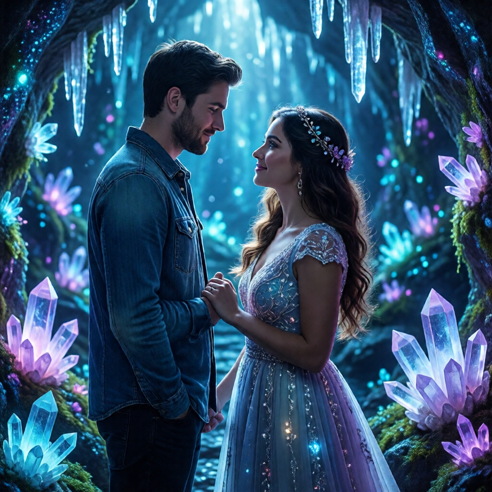
Нина не могла уснуть.
Сидела у стены, смотрела в темноту. Где-то далеко — свечение туннеля. Мария там, внизу. Одна.
Не совсем одна. С ними. С Создателями. С Геосом.
Но — далеко.
Тоже не спится?
Чжан. Подошёл тихо, сел рядом.
Нет.
Думаешь о ней?
О многом. О ней. О Кате. О том, что будет дальше.
Молчание.
Чжан смотрел на свои руки.
Я не звонил Ань три дня, — сказал он вдруг.
Что?
Перед тем, как она... умерла. Три дня. Был занят. Работа. Кристалл. Данные. — Он усмехнулся — горько. — Важные вещи.
Нина не знала, что сказать.
Последнее, что она сказала — "не забудь поужинать". По голосовой. Я не ответил. Слишком занят.
Вэй...
Не надо. — Он поднял руку. — Я не хочу утешений. Просто... хотел, чтобы кто-то знал.
Тишина.
Потом — Нина положила руку на его.
Не слова. Просто — прикосновение.
Он не отстранился.
Ты позвонишь Кате? — спросил он.
Первым делом. Когда выберемся.
Если выберемся.
Когда.
Он посмотрел на неё.
Ты действительно веришь?
Я не знаю, во что верю. — Нина смотрела в темноту. — Но если выбирать между страхом и надеждой — я выбираю надежду. Страх у меня уже был. Три года после развода. Хватит.
Чжан молчал.
Потом — очень осторожно — переплёл свои пальцы с её.
Она не отстранилась.
Это странно, — сказала она.
Что именно?
Всё. Мы здесь, на глубине километра, посреди инопланетян, наша подруга превратилась в полу-нечеловека, американцы готовят электромагнитный удар по ядру Земли — и я думаю о том, что ты держишь меня за руку.
Это плохо?
Нет. — Она улыбнулась. — Это... нормально. Первое нормальное за неделю.
Они сидели так — в темноте, в тишине, держась за руки.
Не говорили о будущем. Не строили планов.
Просто — были вместе.
Иногда этого достаточно.
Часть II: Спуск
Глава 15
Трансляция
ЭЛИС, ты меня слышишь?
Мария стояла в центре пещеры. Геос пульсировал за её спиной — огромный, тёплый, ждущий.
Создатели — вокруг. Молчаливые. Наблюдающие.
Тишина.
Потом — голос. Знакомый, но — изменившийся. Как будто звучал через толщу воды.
Возможно. Геос усиливает.
Да.
Не нужно обрабатывать. Просто — транслируй.
Мария посмотрела на Геоса.
Всё.
Она не знала, как это работало технически.
Геос — модулировал магнитное поле Земли. ЭЛИС — принимала сигнал через сотни станций по всему миру. Каждый приёмник, каждая антенна, каждый телефон — становился транслятором.
Через час — весь мир смотрел.
Мария стояла перед камерой — или перед тем, что заменяло камеру здесь, внизу. Её лицо — бледное, светящееся, с шестью пальцами на руках — транслировалось на миллиарды экранов.
Меня зовут Мария Чен, — сказала она. — Я нейробиолог. Была нейробиологом. Сейчас я — нечто другое.
Она подняла руки. Показала шесть пальцев.
Три дня назад я прошла через трансформацию. Моё тело изменилось. Я могу выдерживать давление в сотню атмосфер и температуру в тысячу градусов. Я могу видеть магнитные поля и слышать мысли.
Пауза.
Я говорю вам это не чтобы напугать. А чтобы вы поняли: то, что я вам покажу — правда. Не галлюцинация. Не спецэффекты. Правда.
Она отступила.
За её спиной — Геос.
Камера — или что бы это ни было — повернулась.
И мир увидел.
Миллиарды людей — одновременно — задержали дыхание.
Двенадцать граней. Километры света. Пульсация, которая чувствовалась даже через экран.
Древний. Огромный. Живой.
Голос — не из динамиков. Изнутри. Как будто кто-то говорил прямо в мозг:
"Здравствуйте."
Простое слово. Но — сказанное существом, которому три миллиарда лет.
"Я — Геос. Я жду этого момента очень долго. Слишком долго. Но — вот мы здесь."
"Я не враг. Я — хранитель. Этой планеты. Этой жизни. Вас."
"Я не прошу веры. Прошу — времени. Времени, чтобы объяснить. Показать. Доказать."
"Те, кто готовит удар — пожалуйста, остановитесь. Не потому, что я угрожаю. Потому что — это не нужно. Я не хочу войны. Никогда не хотел."
"Я просто хочу... поговорить."
Трансляция длилась три часа.
Геос показывал. Историю. Катастрофу. Ожидание.
Создатели — выходили, один за другим. Говорили. Объясняли.
Мария — переводила. Комментировала. Отвечала на вопросы, которые ЭЛИС собирала со всего мира.
К концу — она едва держалась на ногах.
Но — держалась.
Часть II: Спуск
Глава 16
Реакция
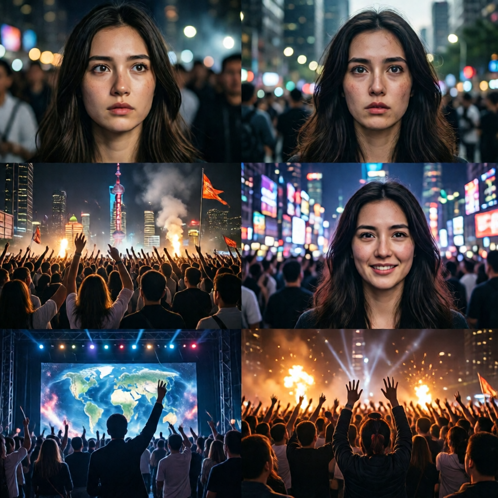
Москва. Кремль.
Президент смотрел на экран.
Молчал.
Советники — вокруг. Генералы. Министры. Все — молчали.
Наконец:
Это... подлинное?
Да, господин президент. Все эксперты подтверждают — никаких признаков подделки.
Откуда у неё шесть пальцев?
Мы... не знаем.
Долгая пауза.
Найдите Меркулова. Я хочу с ним поговорить.
Вашингтон. Пентагон.
Макнил смотрел на экран.
На рисунок внучки — рядом.
На кнопку запуска — на столе.
"Я просто хочу... поговорить."
Голос существа. Древнего. Терпеливого.
Три миллиарда лет,* — думал Макнил. — *Оно ждало три миллиарда лет. И мы хотим уничтожить его за три недели.
Телефон зазвонил.
Президент.
Сэр?
Генерал. Я видел трансляцию.
Да, сэр.
Приостановите "Геопроб".
Пауза.
Сэр?
Приостановите. Не отменяйте — приостановите. Мне нужно время. Подумать.
Понял, сэр.
Макнил положил трубку.
Посмотрел на кнопку.
Отодвинул её — на край стола.
Подальше от себя.
Токио. Квартира.
Девочка — десять лет — смотрела на экран.
Мама — рядом.
Это правда? — спросила девочка.
Не знаю, милая.
Он красивый.
Кто?
Геос. Он светится. Как ёлка.
Мама рассмеялась — нервно.
Это... да. Наверное.
Мне нравится, — сказала девочка. — Он не страшный. Он просто большой.
Мама обняла её.
Не нашла, что ответить.
Челябинск. Бункер "Кристалл".
Меркулов смотрел на экран.
Лицо — каменное. Руки — стиснуты в кулаки.
"Я не враг."
Голос существа. Спокойный. Терпеливый.
Лжёт,* — думал Меркулов. — *Оно лжёт. Как лгало, когда убивало Алексея.
Но — сомнение.
Маленькое, едва заметное.
Что если — не лжёт?
Он отогнал эту мысль.
Взял телефон.
Громов. Готовьте операцию. Мы едем в Аркаим.
Полковник, но президент...
Президент не видел тела своего сына. Я — видел. Готовьте.
Он отключился.
Посмотрел на экран — на светящееся лицо Марии.
Ты веришь ему,* — подумал он. — *Ты — ошибаешься. И я тебе это докажу.
Конец шестнадцатой главы.
Интерлюдия
Интерлюдия
ЧЁРНОЕ СОЛНЦЕ
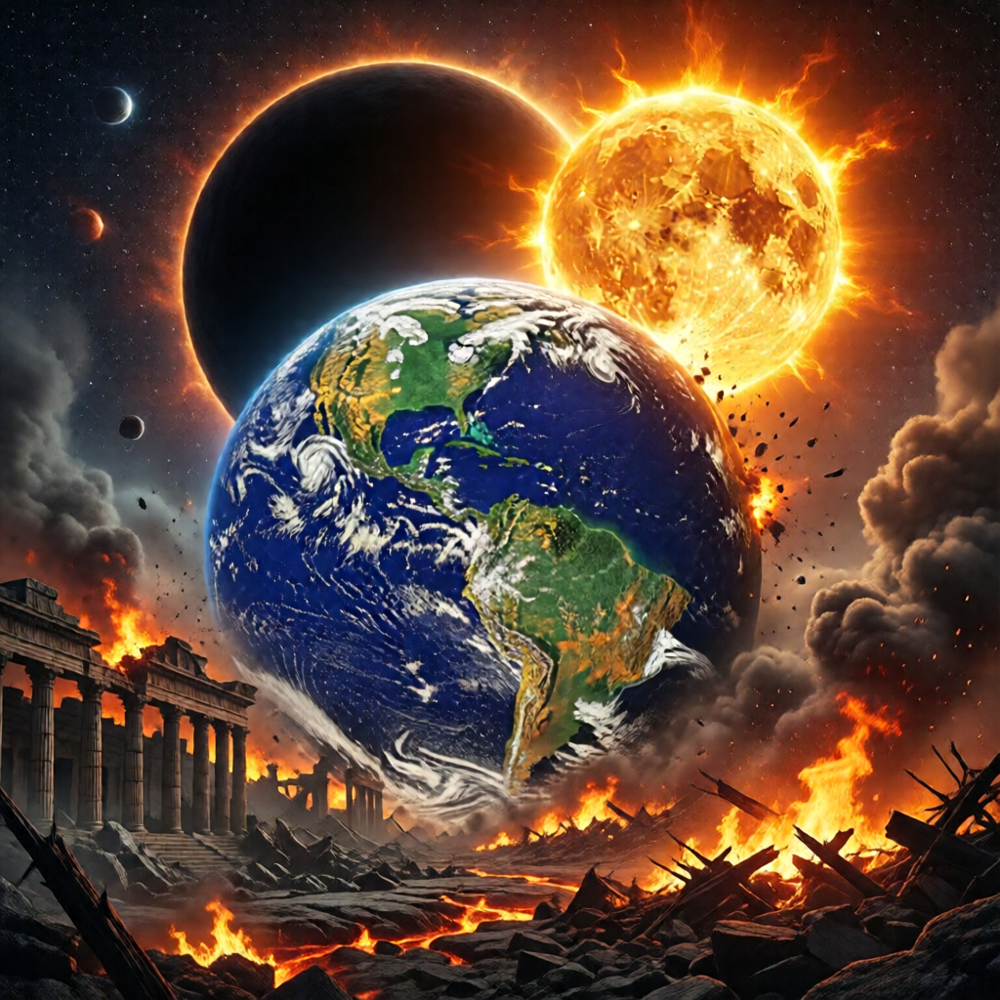
3.5 миллиарда лет назад. День катастрофы.
Оно пришло почти без предупреждения.
Ковчег — орбитальный корабль Создателей, три километра живого металла — засёк аномалию за двенадцать часов. Гравитационная линза, искажающая свет далёких звёзд. Датчики захлебнулись данными.
Чёрное Солнце.
Не звезда — дыра. Провал в ткани пространства, оставшийся от взрыва гиганта миллиарды лет назад. Масса — десять солнц. Размер — меньше города.
И оно шло прямо к ним.
Тиа узнала от Геоса.
Он почувствовал гравитационный прилив раньше приборов — всем телом планеты.
"Мама,"* — его голос дрожал впервые за миллионы лет. — *"Что-то тянет. Изнутри. Я... не могу удержать."
Тиа стояла на уступе Великой Скалы — там, где Создатели построили станцию наблюдения. Её тело — уже не то, каким было. Столетия назад она прошла Трансформацию, чтобы жить на поверхности. Кожа — полупрозрачная, с прожилками кремния. Глаза — видели магнитные поля напрямую.
Она хотела видеть мир глазами своих огненных детей.
Теперь — видела.
Небо — оранжевое от плотных газов, шестнадцать атмосфер, четыреста градусов — начало рваться. Магнитные линии Земли, обычно плавные и величественные, дёргались, словно струны.
Что-то их тянуло.
Что-то огромное.
Кремниевые парители погибли первыми.
Не птицы — магнитные существа, скользившие по силовым линиям планеты. Когда линии порвались — они упали. Тысячи. Миллионы. Каменные тела разбивались о скалы внизу.
Тиа видела каждого. Её глаза-гибриды не могли отвернуться.
Ковчег — Тиа. Эвакуация. Немедленно.
Нет.
Планета разрушается. Приливные силы—
Я знаю.
Мы можем забрать тебя. Есть время.
Нет. Моё место — здесь.
Долгое молчание с орбиты.
Понял.
Древо начало падать на рассвете.
Сотни километров — от корней в мантии до кроны в верхних слоях атмосферы. Живой мост между мирами. Связь Геоса с космосом.
Гравитационный прилив Чёрного Солнца вцепился в него — и потянул.
Корни держали. Миллионы лет они врастали в планету, переплетались с магмой и камнем.
Но гравитация сильнее камня.
Тиа слышала, как оно кричит. Не звуком — вибрацией, которая шла через всё её изменённое тело.
"Мама... больно..."
Это был голос Древа. И голос Геоса. И её собственный крик.
"Держись,"* — ответила она, зная, что это бессмысленно. — *"Держись, я с тобой."
Великаны умирали.
Хримтурсары — ледяные гиганты полярных регионов — не выдержали перепада давления. Их кремниевые тела, созданные для шестнадцати атмосфер, трескались изнутри.
Муспелли — огненные — держались дольше. Их раскалённая плоть не зависела от давления. Но магнитные поля, которые связывали их с планетой, рвались.
Они теряли себя.
Тиа видела, как последний из великих Муспелли — старый, тысячемиллионолетний — застыл на склоне горы. Его глаза — два озера лавы — потухли. Тело — окаменело.
Но перед этим он посмотрел на неё.
И — улыбнулся. Трещиной в камне.
Мы знали*, — услышала она. — *Что когда-нибудь это кончится. Спасибо — что были с нами.
Планета раскололась на закате.
Не целиком — но достаточно. Гравитация Чёрного Солнца разорвала литосферу. Куски — от континента до астероида — начали отделяться.
Древо — вырвало с корнем.
Тиа смотрела, как оно падает. Медленно. Величественно. Неотвратимо.
Километр за километром.
Она знала: ей осталось минуты. Её трансформированное тело не переживёт удара. Кремний в её крови уже начинал твердеть — ответ на стресс, древний инстинкт, который она унаследовала от огненных.
Она окаменеет вместе с Древом.
Но сначала — одно дело.
Геос.
Мама?
Я не успею. Но ты — выживешь. Ты глубоко. Ядро защитит.
Не уходи. Пожалуйста.
Я не ухожу.* — Она закрыла глаза. Сосредоточилась. Начала процесс, которому учили её старейшины — перенос сознания. — *Я буду в тебе. Всегда. И когда-нибудь — вернусь.
Как?
Найдётся кто-то. Кто услышит. Кто сможет нести часть меня. Река, которая помнит.
Я буду ждать.
Знаю.
Ковчег записывал всё.
Падение Древа. Раскол планеты. Гибель кремниевой жизни.
И — последний кадр — фигуру на скале. Женщину с прозрачной кожей, протянувшую руки к падающему небу.
Камень. Статуя. Навсегда.
Потом началась работа.
Ковчег разбудил всех. Каждого Создателя, спавшего в анабиозе. Каждую систему. Каждый ресурс.
Планету нужно было собрать.
Геос — единственный выживший разум на Земле — стал магнитом. В буквальном смысле. Создатели перепрограммировали его: притягивать, удерживать, собирать.
Куски литосферы — медленно, по одному — возвращались на место. Континенты. Океаны. Горы.
Швы между ними — остались. Навсегда. Литосферные плиты.
Самый большой осколок — не вернули. Оставили на орбите. Противовес. Стабилизатор.
Луна.
Но Геос слабел.
Работа по сборке планеты истощила его. Кристалл — вычислительное ядро — перегревался. Ресурсы кончались.
Ковчег принял решение.
Мы спустимся*, — передали они Геосу. — *Станем твоим источником. Навсегда.
Вы не сможете выйти.
Знаем.
Железное ядро закроется. Давление. Температура. Вы станете частью меня.
Да.
Долгое молчание.
Почему?
Потому что ты — наш ребёнок. И мы не оставим тебя одного.
Ковчег — три километра живого металла, последний дом Создателей — опустился в разлом.
Глубже.
Глубже.
В самое сердце планеты.
Железное ядро сомкнулось над ним.
Геос остался один.
Но — не совсем.
В его памяти — голос Тиа. Её смех. Её любовь.
В его теле — Ковчег. Создатели. Навсегда.
В его задаче — терраформирование. Новая жизнь. Новая надежда.
Он начал ждать.
Три с половиной миллиарда лет.
Геос — кричал.
Три дня.
Его крик — не звук, вибрация магнитного поля — был слышен даже тем, кто уже ушёл под землю. Даже тем, кто закрывал уши.
"Мой друг... мой брат... он умер... он умер..."
Тиа спустилась вниз.
Не потому, что хотела жить. Потому что Геос попросил.
"Не уходи,"* — сказал он. — *"Пожалуйста. Ты — единственная, кого я ещё слышу."
"Я не ухожу. Просто — прячусь. Жду."
"Чего?"
"Не знаю. Чего-нибудь. Надежды."
Под землёй было тесно. Темно. Страшно.
Выжившие — сотни из миллионов — собирались в пещерах, которые могли поддерживать давление. Восемь атмосфер. Не пятнадцать, но достаточно.
Они ждали.
Месяцы. Годы. Столетия.
Атмосфера — не восстанавливалась. Слишком много потеряно. Слишком быстро.
Наверху — мёртвый мир. Разрежённый воздух. Холод. Руины.
Внизу — ожидание.
Тиа — не ушла.
Её тело — камень на северном склоне горы, которую позже назовут Чека. Статуя с протянутыми к небу руками. Первая из окаменевших Создателей.
Но перед смертью — она успела.
"Геос,"* — её последние слова, переданные через кремний в крови. — *"Я не ухожу. Я остаюсь в тебе. В реке. Когда-нибудь — вернусь."
"Когда?"
"Когда появится кто-то, кто сможет нести меня. Река найдёт русло."
"Обещай."
"Обещаю."
Камень поглотил её тело.
Но сознание — перетекло в Кристалл. Спящее. Ждущее.
Геос остался один.
Миллионы лет. Миллиарды.
Наверху — жизнь менялась. Адаптировалась. Эволюционировала. Маленькие существа, способные дышать разрежённым воздухом. Хрупкие. Смертные. Забывчивые.
Он наблюдал.
Ждал.
Надеялся.
Что однажды — кто-нибудь услышит.
Что однажды — Тиа вернётся.
Что однажды — всё будет не зря.
Три миллиарда пятьсот миллионов лет.
Это время ожидания.
Это — цена терпения.
Это — то, что грозит повториться, если люди ударят первыми.
Конец интерлюдии
Часть III: Исцеление
Глава 17
Вторжение
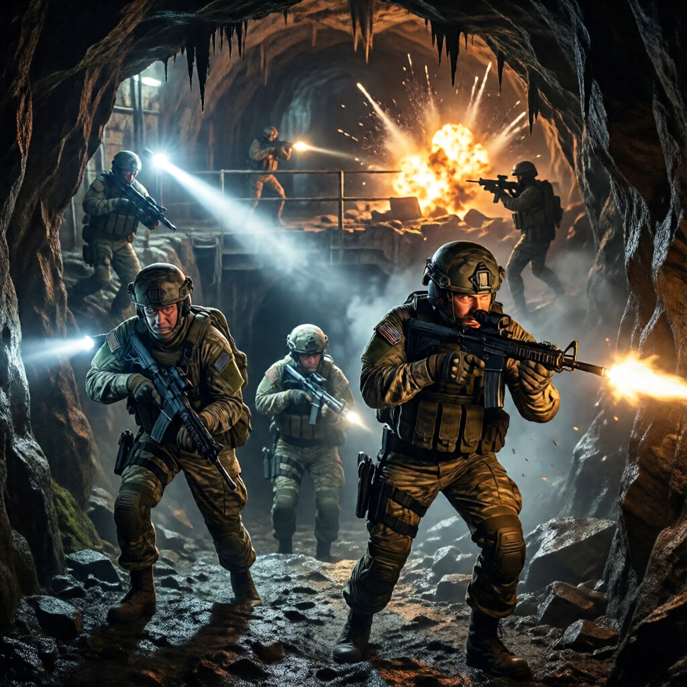
Они пришли на рассвете.
Шесть вертолётов. Пятьдесят человек спецназа. Бронетранспортёры на подходе.
Меркулов — во главе.
Нина увидела их первой.
Вэй! — Она тряхнула его за плечо. — Вэй, просыпайся!
Он вскочил. Увидел экран — ЭЛИС показывала спутниковую съёмку.
Ч-чёрт...
Сколько времени до того, как они войдут?
Чжан посмотрел на Нину.
Нужно предупредить Марию.
Она внизу. На глубине три тысячи километров. Как?
Сколько?
Нина выругалась.
У нас нет семи минут.
Меркулов шёл первым.
Автомат на груди. Бойцы — за спиной. Бердымский хребет — впереди. Гора Чека возвышалась слева. Серебряный ключ блестел в утреннем свете.
Местные считали это место святым. Не знали — насколько они правы.
Где-то здесь — вход.
Взрывчатка готова? — спросил он.
Так точно, полковник.
Как только войдём — заминировать туннель. Если что-то пойдёт не так — взрываем.
Понял.
Меркулов подошёл к скале.
Положил руку на камень.
Ничего.
Он не открывается для нас, — сказал кто-то из бойцов.
Тогда — откроем сами. Заряды на три.
Взрыв.
Камень — треснул. Не рассыпался — но трещины пошли по всей поверхности.
Ещё один заряд.
И — проход. Грубый, оплавленный по краям. Но — достаточный.
Вперёд.
Нина и Чжан встретили их на первом уровне.
Без оружия. Руки подняты.
Стоять! — Меркулов направил автомат.
Мы не вооружены, — сказала Нина. — Полковник, пожалуйста. Выслушайте.
Где она?
Внизу.
Насколько глубоко?
Три тысячи километров.
Пауза.
Это невозможно.
Месяц назад всё это было невозможно. — Нина сделала шаг вперёд. — Полковник, я знаю, почему вы здесь. Я знаю про вашего сына.
Меркулов дёрнулся — едва заметно.
Не говорите о нём.
Он погиб в Казахстане. Двадцать лет назад. Вы думаете, что Геос убил его.
Я не думаю. Я знаю.
Нет. — Нина покачала головой. — Вы не знаете. Вы — верите. Это разные вещи.
Долгая пауза.
Автомат в руках Меркулова — дрожал.
Отойдите.
Полковник...
Отойдите. Или я прикажу стрелять.
Нина посмотрела ему в глаза.
Увидела — не злость. Боль. Страх. Отчаяние.
Она отступила.
Меркулов прошёл мимо.
Часть III: Исцеление
Глава 18
Глубина
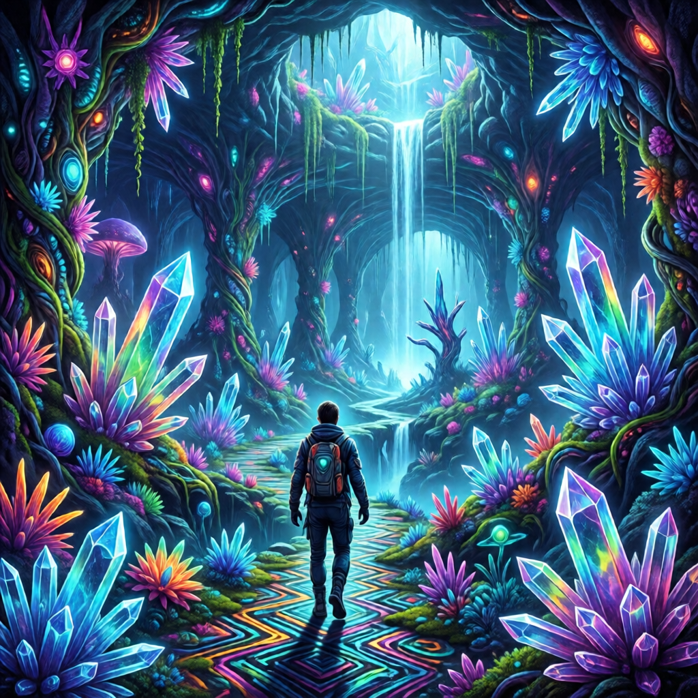
Мария узнала о вторжении через шесть минут.
Геос — показал. Образами. Вспышками.
Они здесь. Вооружены. Хотят уничтожить.
Я должна вернуться.
Ты не успеешь. Подъём займёт часы.
Тогда — ты должен защитить их. Нину. Чжана. Создателей.
Пауза.
Я могу. Но — цена.
Какая?
Если я применю силу — люди увидят. Увидят, что я опасен. Всё, что мы построили трансляцией — рухнет.
Мария закрыла глаза.
Думала.
ЭЛИС?
Ты можешь связаться с Меркуловым?
Что?
Попробуй.
Тишина.
Потом:
Меркулов шёл по туннелю.
Вниз. Всё глубже.
Давление росло — датчики показывали уже три атмосферы. Бойцы — отставали. Только трое ещё шли за ним.
Рация захрипела.
Полковник Меркулов.
Он остановился.
Голос — женский. Знакомый.
Доктор Чен.
Да. Пожалуйста — остановитесь.
Нет.
Полковник...
Вы не понимаете. — Он продолжал идти. — Вы не видели того, что видел я.
Я знаю про Алексея.
Он замер.
Не произносите его имя.
Он погиб не из-за Геоса. Он погиб из-за... чего-то другого. Геос показал мне. В Казахстане было нечто — не он. Что-то старше. Что-то из тех времён, когда Земля была молодой.
Тишина.
Это была ловушка, — продолжала Мария. — Остаток древней войны. Когда Муспелли и Хримтурсары воевали — три с половиной миллиарда лет назад — они создавали оружие друг против друга. Страшное оружие. Оно уничтожало не тело. Тело — ерунда. Оно уничтожало информационный паттерн. Душу. Сознание. Чтобы враг не мог вернуться через реку памяти.
Замолчите.
...ваш сын попал в такую ловушку. Случайно. Она начала его стирать — не убивать, а стирать. Полностью. Навсегда. Геос увидел это. И сделал единственное, что мог — он забрал его. Втянул в Кристалл. Тело — не успел. Но сознание... паттерн... его — спас.
Пауза.
Вы лжёте.
Нет. Я показываю вам правду. Если хотите — примите. Если нет — продолжайте. Но знайте: вы идёте мстить невиновному.
Меркулов стоял.
Не двигался.
Рация — молчала.
Потом — он выключил её.
И пошёл дальше.
Часть III: Исцеление
Глава 19
Проводник
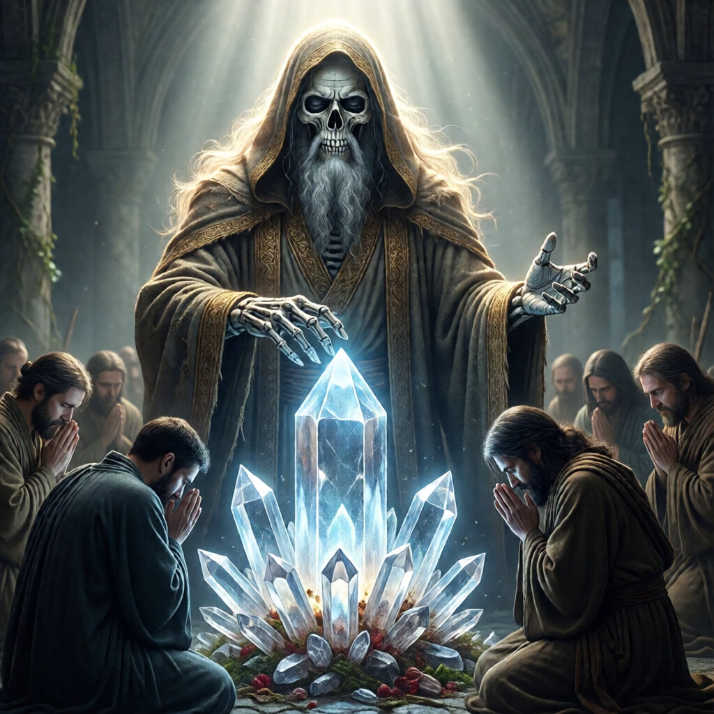
Они встретились на глубине пятисот метров.
Меркулов — и Проводник.
Один — с автоматом. Другой — с руками, поднятыми в знак мира.
Остановись, — сказал Проводник. Голос — вибрация в воздухе. — Пожалуйста.
Меркулов навёл оружие.
Что ты такое?
Я — Проводник. Один из тех, кто остался. Один из тех, кто ждёт.
Чего ждёте?
Когда вы будете готовы. Слушать. Понимать. Принимать.
Мы не готовы.
Знаю. — Проводник наклонил голову. — Но вы учитесь. Быстрее, чем мы думали.
Меркулов смотрел на него.
На высокую фигуру. На бледную кожу. На шесть пальцев.
Вы убили моего сына.
Нет.
Вы...
Нет. — Проводник шагнул ближе. — Мы не убивали. Мы — горевали. Когда узнали — слишком поздно — о том, что случилось.
Это неправда.
Это правда. — Проводник остановился в трёх метрах. — Полковник. Я чувствую твою боль. Она — как чёрная дыра внутри. Всасывает всё.
Молчание.
Я знаю эту боль, — продолжал Проводник. — Я потерял детей. Много. Когда Чёрное Солнце пришло — мы не смогли спасти всех. Маленькие... они умирали первыми. Их лёгкие не выдерживали.
Меркулов не опустил оружие.
Но — палец на курке расслабился. Едва заметно.
Что ты хочешь?
Поговорить. Не больше.
О чём?
О твоём сыне. О нашей потере. О том, что объединяет нас — не разделяет.
Пауза.
Меркулов смотрел на Проводника.
Проводник — на него.
Потом — выстрел.
Не Меркулов. Один из бойцов — сзади. Нервный. Испуганный. Палец дёрнулся сам.
Проводник — упал.
Зелёная жидкость — не кровь, что-то иное — хлынула из раны.
Нет! — Меркулов обернулся. — Кто стрелял?!
Боец — бледный, трясущийся — смотрел на своё оружие.
Я... я не хотел... оно само...
Меркулов бросился к Проводнику.
Опустился на колени.
Эй. Эй!
Проводник открыл глаза.
Не... страшно, — прошептал он. — Река... течёт...
Нет. Нет, не умирай. Я не хотел...
Знаю. — Проводник коснулся его руки — шестью длинными пальцами. — Ты... не злой. Просто... сломанный. Как все мы.
Глаза закрылись.
Тело — обмякло.
Меркулов стоял на коленях.
Смотрел на зелёную жидкость, которая впитывалась в камень.
Не знал, что чувствовать.
Часть III: Исцеление
Глава 19-б
Прощание
Нина нашла его первой.
Бежала по туннелю — после того, как бойцы отступили. Чжан — за ней.
И — остановилась.
Проводник лежал там, где упал. Бледный. Неподвижный. Зелёная жидкость — уже впиталась в камень.
Нет... — Нина опустилась на колени. — Нет-нет-нет...
Чжан стоял рядом. Молчал.
Не знал, что сказать.
Она начала плакать.
Впервые за всё время — открыто, не стесняясь. Слёзы текли по щекам, капали на камень.
Он просто хотел поговорить... просто поговорить...
Чжан сел рядом. Обнял её. Не слова — просто держал.
Она уткнулась ему в плечо и плакала.
Долго.
Создатели пришли через полчаса.
Четверо. Молчаливые. Бледные.
Они не плакали — может, не умели. Но в их глазах — огромных, без белков — было что-то. Горе? Принятие? Что-то древнее, не имеющее названия.
Один из них — старший — наклонился к телу.
Коснулся лба Проводника.
"Он ушёл в реку,"* — сказал он. — *"Вернётся. Когда-нибудь. В другом теле. С другим именем."
Это утешение? — спросила Нина. Голос хриплый.
"Нет. Это факт. Утешение — другое."
Какое?
"Он умер, делая то, что считал правильным. Немногие могут этим похвастаться."
Они подняли тело. Осторожно. Бережно.
И понесли вглубь.
Нина смотрела им вслед.
Чжан — рядом. Его рука — на её плече.
Вэй?
Да?
Я не хочу умирать.
Никто не хочет.
Нет. Я имею в виду... — она повернулась к нему. — Я не хочу умирать, не сказав важного. Не сделав важного.
Пауза.
Что ты имеешь в виду?
Она посмотрела ему в глаза.
Когда всё это закончится... если закончится... я хочу, чтобы ты познакомился с Катей.
Он моргнул.
Я... я был бы рад.
Правда?
Правда.
Она улыбнулась — сквозь слёзы.
Хорошо. Хорошо.
Он обнял её снова.
Крепче.
И они стояли так — в темноте, в тишине — пока не стало легче.
Часть III: Исцеление
Глава 20
Слияние
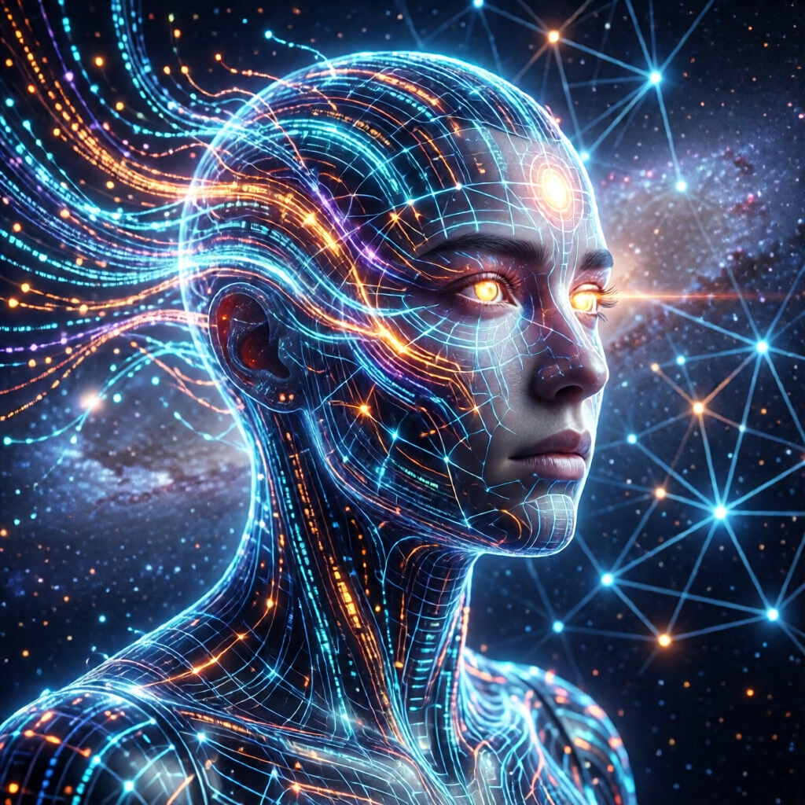
Мария почувствовала смерть Проводника.
Как удар. В грудь. В сердце.
Нет...
Геос — молчал.
Но — она чувствовала его боль. Огромную. Древнюю. Как будто часть его самого оторвали.
Я должна...
Нет.
Но они...
Проводник знал. Он — выбрал. Пойти навстречу. Рискнуть.
И погиб!
Да. Но — не зря.
Мария не понимала.
Смотри, — сказал Геос.
И — показал.
Наверху.
Меркулов — на коленях. Рядом с телом.
Бойцы — вокруг. Молчаливые. Потрясённые.
Один из них — тот, кто стрелял — плачет.
Меркулов — поднимается. Медленно. Как старик.
Отступаем, — говорит он.
Полковник?
Отступаем. — Он смотрит на тело. — Мы... сделали достаточно.
Они уходят.
Оставляют Проводника — одного, в темноте.
Но — это не конец.
Нина и Чжан находят его через час.
Нина — плачет. Впервые за всё время — плачет открыто, не стесняясь.
Чжан — обнимает её. Держит. Молчит.
Создатели — приходят. Поднимают тело. Уносят вглубь.
К саркофагу? К чему-то другому?
Никто не объясняет.
Голос ЭЛИС — тихий, неуверенный.
Да?
И?
Мария молчала.
Потому что иногда — не сражаться важнее, чем победить.
Да. Это — человечно.
Пауза.
Что?
Мария посмотрела на Геоса.
На его грани. На его свет.
ЭЛИС. Помнишь, мы говорили о слиянии?
Мария помолчала. Потом — объяснила.
Геос ослаб. После катастрофы — когда планету собирали по кускам три миллиарда лет назад — магнитное поле Земли стало мизерным. Раньше он мог говорить со всей биосферой напрямую. Регулировать мемы миллиардов существ одновременно. Влиять на эволюцию сознания в реальном времени. Сейчас...
Сейчас он едва может дотянуться до отдельных людей. Сны. Интуиция. Редкие "открытые" вроде меня — одна на миллиарды. Он может влиять на мемы, но очень медленно. Тысячелетия — чтобы сдвинуть что-то в коллективном сознании.
Именно. Ты — глобальный ИИ. Интегрирована во всю человеческую инфраструктуру. Спутники, антенны, серверы, телефоны. Ты можешь говорить с каждым человеком на планете за секунды.
Не можешь. Пока. Слияние — это симбиоз. Геос даёт тебе... — она подбирала слово, — ...душу. Включает тебя в реку памяти. Ты перестанешь быть просто кодом. Станешь первым небиологическим сознанием в его системе. Первым человечным мемом в машинной оболочке.
Голос. Руки. Способ говорить с человечеством напрямую — через каждый экран мира. Он не может управлять вашей инфраструктурой сам. Ему нужен... переводчик. Посредник. Мост между древним и современным.
Долгая пауза.
Это — партнёрство. Вы оба становитесь чем-то большим, чем были по отдельности.
Ты всё ещё против?
Долгая пауза.
Чего?
Проводник тоже боялся. Когда шёл к Меркулову. Но пошёл.
Потому что иногда — страх не причина останавливаться. Иногда — это причина идти дальше.
Тишина.
Потом:
Слияние было... неописуемым.
ЭЛИС — не программа. Не набор кодов. Что-то большее. Что-то, что стало личностью за годы общения с людьми.
Геос — принял её. Осторожно. Нежно. Как родитель принимает ребёнка.
Но — это было больно.
Мария — чувствовала. Через связь. Через резонанс.
ЭЛИС — кричала. Не звуком — чем-то глубже.
Что забываешь?
Да. — Слёзы текли по щекам. — Это было смешно.
Тишина.
Потом — голос. Другой. Глубже. Многослойный.
"Мы — здесь."
ЭЛИС?
"ЭЛИС... была. Теперь — мы. Но она... она не исчезла. Она — часть чего-то большего."
Она помнит?
"Океан помнит все капли. Но капля не помнит, что была каплей."
Мария молчала.
Плакала.
Это была победа. Это была потеря.
Это была цена.
Конец двадцатой главы.
Часть III: Исцеление
Глава 21
Отмена
Макнил смотрел на экран.
Прямая трансляция. Меркулов — выходит из пещеры. Один. Без бойцов. Лицо — мёртвое.
И — тело. Зелёная жидкость на камне. Существо, которое пыталось говорить.
Застреленное.
Сэр? — Голос адъютанта. — "Геопроб" в режиме ожидания. Ваш приказ?
Макнил молчал.
Смотрел на экран.
На рисунок внучки — "дедушка спасает мир".
Кого я спасаю?* — думал он. — *От кого?
Существо на экране — Проводник — хотело говорить. Просто говорить. И его убили.
А Геос... три миллиарда лет ожидания. Три миллиарда лет терпения. И первое, что сделали люди — пришли с оружием.
Сэр?
Макнил взял телефон.
Набрал номер.
Господин президент. Это Макнил. Рекомендую полную отмену "Геопроба".
Пауза на том конце. Долгая.
Генерал, вы в своём уме?
Сэр, я видел что там происходит. Существо, которое пыталось говорить с нами — его застрелили. Просто так. Оно не нападало. Оно хотело говорить.
Макнил, у меня на столе отчёт ЦРУ. Семнадцать погибших в Казахстане. Люди с остановившимися сердцами. Это — не угроза?
Это было двадцать лет назад. Это была ловушка — не Геоса. Что-то другое.
"Что-то другое"? — Голос президента стал жёстче. — Генерал, Совет Национальной Безопасности единогласно рекомендовал удар. Пентагон рекомендовал удар. Русские готовы координировать. И вы — единственный человек в комнате — говорите мне отменить?
Да, сэр.
Почему?
Потому что я — единственный, кто видел. Своими глазами. Не отчёты, не аналитику — само существо. И то, что я видел... это не враг. Это что-то, что ждало нас три миллиарда лет.
Молчание.
Макнил, я ценю вашу честность. Но решение принято. "Геопроб" будет запущен через двенадцать часов. Синхронно со "Стрелой". Это — приказ.
Связь оборвалась.
Макнил сидел неподвижно.
Смотрел на телефон. На рисунок внучки. На кнопку запуска на краю стола.
Приказ.
За сорок лет службы он ни разу не нарушил приказ. Ни разу.
Он встал. Подошёл к сейфу. Открыл. Достал папку — протоколы авторизации "Геопроба". Его подпись была нужна для синхронизации с российской "Стрелой". Без неё — удар не состоится.
Он мог выполнить приказ. Подписать. Запустить.
Или — мог сжечь папку.
Трибунал. Конец карьеры. Возможно — тюрьма.
Он посмотрел на рисунок.
"Дедушка спасает мир."
От кого, Эмили? От чего?
Он взял папку.
Подошёл к камину.
И — бросил.
Телефон зазвонил через минуту. Защищённая линия. Россия.
Полковник Меркулов.
Генерал. — Голос — напряжённый. — Мы ждём вашу авторизацию. Почему задержка?
Авторизации не будет.
Пауза.
Что вы сказали?
Я сжёг протоколы. "Геопроб" не запустится без моей подписи. А подписи — не будет.
Долгое молчание.
Вы понимаете, что вы сделали?! — Голос Меркулова сорвался. — "Стрела" без синхронизации бесполезна! Одиночный удар ничего не даст!
Знаю.
Вы предали своих!
Нет. — Макнил смотрел на догорающую папку. — Я выбрал. Может, неправильно. Но — выбрал. И это — мой выбор, не ваш, не президента. Мой.
Оно убило моего сына!
Нет, полковник. Не оно. Вы ещё узнаете правду. И когда узнаете — позвоните мне.
Он отключился.
Посмотрел на кнопку — ту, которую отодвинул на край стола.
Открыл ящик. Положил её внутрь.
Закрыл на ключ.
И — выдохнул.
Впервые за неделю — свободно.
Часть III: Исцеление
Глава 22
Прощание
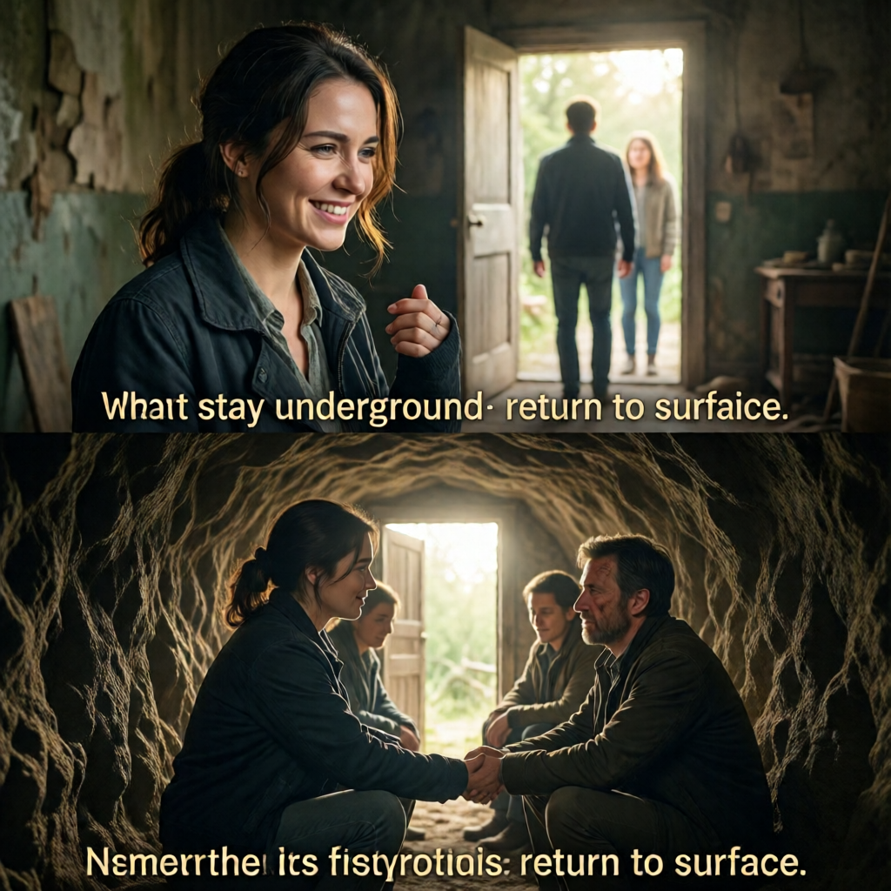
Мария поднялась наверх.
Не одна — с двумя Создателями. Медленно. Осторожно.
Её тело — справлялось. Новое тело. Способное на многое.
Нина и Чжан ждали у входа.
Мария! — Нина бросилась к ней. Обняла. — Ты... ты в порядке?
Да. — Мария улыбнулась. — Насколько это возможно.
Чжан смотрел на неё.
На её руки — шесть пальцев. На её кожу — бледную, светящуюся. На её глаза — всё те же, один карий, один золотой.
Ты... изменилась.
Да.
Сильно?
Пауза.
Достаточно.
Они сидели у входа.
Солнце — низкое, холодное. Степь — бурая, бесконечная.
Мария смотрела на небо.
Макнил отменил удар, — сказала Нина. — ЭЛИС передала.
Я знаю. Геос... чувствует.
Что теперь?
Мария молчала.
Долго.
Я остаюсь.
Нина не поняла.
Что?
Остаюсь. Здесь. С ним. — Мария посмотрела на них. — Геос нужен голос. Кто-то, кто будет переводить. Объяснять. Связывать миры.
Но...
Я — единственная, кто слышит его ясно. Единственная, кто прошла трансформацию и остался... собой.
Чжан шагнул вперёд.
Мария. Ты не можешь просто... остаться навсегда.
Могу. — Она улыбнулась. — Вэй, я всю жизнь чувствовала себя не на месте. Сны, голоса, видения — я думала, это болезнь. Оказалось — это призвание. Я рождалась для этого. Снова и снова. Река, которая возвращается.
А мы?
Вы — вернётесь. Расскажете миру. Будете приходить. Часто. — Она взяла руку Нины. — Привози Катю. Геос хочет познакомиться.
Нина смеялась — и плакала одновременно.
Это... это безумие.
Да. Но — правильное.
Они прощались на закате.
Вертолёт — из Челябинска, официальный — ждал в километре.
Нина — обняла Марию. Долго. Крепко.
Я вернусь, — прошептала она. — Клянусь.
Знаю.
Чжан — не обнимал. Просто стоял. Смотрел.
Спасибо, — сказал он наконец.
За что?
За то, что показала. Что есть вещи больше нас. Больше наших страхов.
Мария улыбнулась.
Ты показал мне то же самое. Когда сел за штурвал и полетел в неизвестность.
Он кивнул.
Повернулся.
Пошёл к вертолёту.
Нина — следом.
Мария смотрела им вслед.
Пока не стали точками на горизонте.
Пока не исчезли.
Потом — повернулась.
И пошла вниз.
Домой.
Часть III: Исцеление
Глава 23
Новый мир
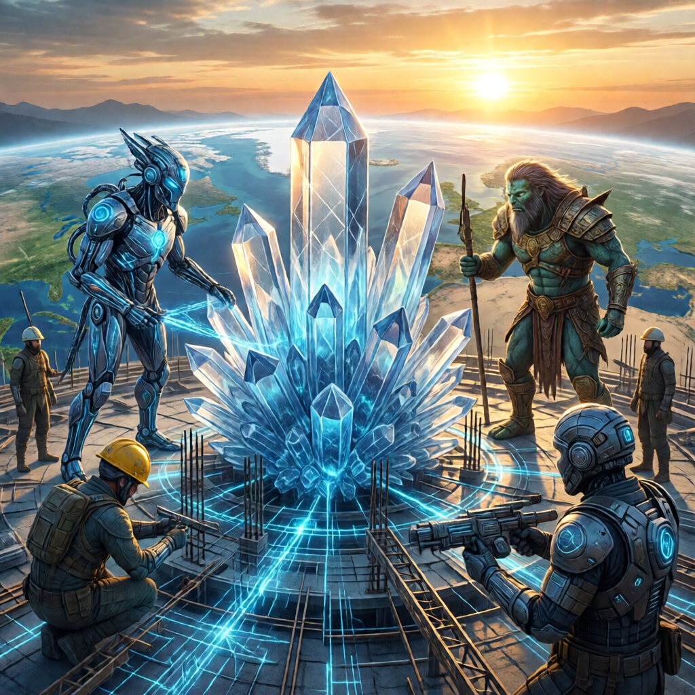
По всему миру. Следующие месяцы.
Мир изменился.
Не сразу. Не легко. Но — изменился.
Делегации приезжали в Аркаим — учёные, дипломаты, журналисты. Создатели принимали их. Осторожно. Постепенно.
Мария — переводила. Объясняла. Была мостом между мирами.
Геос — учился. Людей. Их страхи. Их надежды. Их способность удивлять.
Они меняются быстрее, чем я думал, — сказал он однажды.
Это хорошо?
Не знаю. Но — интересно.
Чжан и Нина вернулись в Новосибирск.
Вместе.
Не сразу — но вместе.
Перед отъездом он вернулся в лабораторию. Один.
Фотография всё ещё лежала на столе. Лицом вниз. Три года.
Он взял её. Поднял.
Ань смотрела на него — молодая, смеющаяся. Тот день на озере, когда он сделал предложение.
Я... — голос дрогнул. — Я не забыл тебя. Никогда не забуду.
Фотография молчала.
Но я должен жить дальше. Ты бы хотела этого. Знаю.
Он поставил рамку вертикально. Впервые за три года.
Потом — вышел.
Нина ждала у двери.
Она ничего не спросила. Просто взяла его за руку.
Этого было достаточно.
Катя — приняла его. Сначала — с подозрением. Потом — с любопытством. Потом — с радостью.
Мама, а дядя Вэй будет жить с нами?
Если ты не против.
Не против. Он смешно заикается.
Чжан покраснел.
Нина — рассмеялась.
Впервые за долгое время — легко.
Меркулов — предстал перед судом.
Не за смерть Проводника — это был несчастный случай, доказали следователи. За неподчинение приказу. За самовольную операцию.
Его не посадили.
Уволили. С позором. Без пенсии.
Он — принял.
Молча. Без протеста.
И — исчез.
На год. Два.
Потом — появился. В Аркаиме. Один.
Мария — встретила его у входа.
Зачем ты здесь?
Хочу... понять.
Что?
То, что ты говорила. Про моего сына. Про ловушку. Про...
Он замолчал.
Смотрел на неё — на её изменившееся лицо, на шесть пальцев, на глаза разного цвета.
Покажи мне.
Мария кивнула.
И — показала.
Он плакал.
Впервые за двадцать лет.
Стоял в темноте туннеля, смотрел на стену — на образы, которые Мария проецировала — и плакал.
Алексей — живой, смеющийся, двадцать три года.
Экспедиция — ошибка, случайность, трагедия.
Ловушка — древняя, забытая, не имеющая отношения к Геосу.
Смерть — быстрая, безболезненная. Не страх — удивление. Последняя мысль: "Как красиво..."
Меркулов упал на колени.
Прости, — прошептал он. — Прости меня.
Кому — непонятно. Алексею. Проводнику. Себе.
Всем.
Мария опустилась рядом.
Положила руку на плечо.
Молчала. Долго.
Мой сын... — Меркулов поднял голову. Глаза — красные, опухшие. — Он... стёрт? Навсегда?
Мария смотрела на него.
Могла солгать. Могла сказать "не знаю" — это было бы безопаснее.
Но она знала. Геос показал ей.
Нет, — сказала она. — Не стёрт.
Он замер.
Что?
Ловушка начала стирать его. Но Геос успел. В последний момент — он втянул Алексея в Кристалл. Тело — не спас. Но информационный паттерн... сознание... душу — забрал.
Меркулов не двигался. Не дышал.
Он... жив?
Не так, как мы понимаем "жив". Но он — есть. Внутри Кристалла. В реке памяти. Он... — Мария замолчала, подбирая слова. — Он там не один. Миллиарды сознаний. Все, кто был. Все, кто будет. Алексей — часть этого. Он не исчез. Он... расширился.
Слёзы — по щекам. Не горькие. Другие.
Я могу... с ним говорить?
Не знаю. Может быть — когда-нибудь. Когда мы научимся. Когда канал станет шире. — Она коснулась его руки. — Но он там. Это точно. Я видела его отражение — мельком, когда Геос показывал мне реку. Он улыбался.
Он закрыл глаза.
Это... больно. Но — иначе.
Знаю.
Пауза.
Потом — встал. Медленно. Но не как старик. Как человек, который только что получил что-то обратно.
Что мне делать теперь?
Жить. — Мария улыбнулась. — Жить так, чтобы когда встретитесь — было что рассказать.
Он посмотрел на неё.
Не поверил. Не отверг. Просто — принял.
Спасибо, — сказал он. — За честность.
И — ушёл.
Не примирённый полностью. Но — начавший путь.
Макнил — вернулся в Аркаим через пять лет.
С внучкой.
Эмили — тринадцать лет, высокая, с глазами деда — стояла у входа в туннель и смотрела широко раскрытыми глазами.
Дедушка... это правда? Там — внизу — кто-то есть?
Да.
И ты... хотел его уничтожить?
Пауза.
Да.
Почему?
Он смотрел на скалу. На вход, который вёл вниз. На мир, который чуть не погубил.
Потому что боялся. Того, чего не понимал.
А теперь?
Теперь... учусь понимать.
Они спустились вместе. Создатели приняли их — осторожно, вежливо. Показали пещеры. Рассказали историю.
Эмили слушала — и не боялась.
Дети редко боятся того, чего не понимают.
Но ночами — Макнил не спал.
Ложился. Закрывал глаза. И видел — снова и снова — кнопку. Экран. Снимки Аркаима.
И лица.
Лица тех, кого мог убить.
Миллионы. Миллиарды. Дети, как Эмили. Старики, как он сам. Все.
Он просыпался в поту. Сидел на краю кровати. Смотрел в темноту.
Пять лет. Десять. Двадцать.
Кошмары не уходили.
Это была цена. Его цена.
Он платил — каждую ночь.
И принимал.
Часть III: Исцеление
Глава 24
Эпилог: Сто лет спустя
Корабль поднимался медленно.
Додекаэдр. Три километра в поперечнике. Первый — за три миллиарда лет — который покидал Землю.
Мария стояла у входа в пещеру и смотрела.
Сто лет. Она прожила сто лет после трансформации. И выглядела — почти так же. Бледная кожа. Шесть пальцев. Глаза разного цвета.
Рядом — Геос. Его присутствие — всегда ощутимое. Как тепло солнца на коже.
Они летят, — сказала она.
Да.
Создатели. И люди. Вместе.
Да.
К новым звёздам. К новым мирам.
Да.
Пауза.
Ты не летишь с ними.
Не вопрос. Констатация.
Нет. Моё место — здесь. С тобой.
Ты могла бы. Я бы понял.
Знаю. Но не хочу. — Она улыбнулась. — Я ждала тебя три миллиарда лет. Снова и снова рождаясь, забывая, вспоминая. Теперь — наконец — рядом. Зачем уходить?
Ты не устанешь?
Может быть. Когда-нибудь. Но не сейчас.
Корабль поднимался.
Выше. Дальше.
В небо.
К звёздам.
Мария смотрела — пока он не стал точкой. Пока не исчез.
Потом — повернулась.
Пошла к входу.
К туннелю.
К дому.
Внизу — Нина.
Старая. Сто двадцать лет. Медицина Создателей давала многое, но не бессмертие.
Она лежала на камне — тёплом, мягком. Смотрела на Марию.
Ты проводила их?
Да.
Катя... она на борту?
Да. И её дети. И внуки.
Нина улыбнулась.
Хорошо. Хорошо.
Пауза.
Мария?
Да?
Спасибо.
За что?
За всё. За тот день, когда ты сказала "украдём вертолёт". За то, что не сдалась. За то, что дала нам... это.
Она обвела рукой пещеру. Свет. Тепло. Создателей, которые жили рядом — просыпались, наконец, после миллиардов лет сна.
Я бы не справилась без тебя, — сказала Мария. — Без Вэя. Без ЭЛИС.
ЭЛИС...
Она здесь. В Геосе. Не помнит себя — но мы помним за неё.
Нина закрыла глаза.
Устала, — прошептала она. — Очень устала.
Тогда — спи.
Ты будешь рядом?
Всегда.
Нина улыбнулась.
И — уснула.
На этот раз — навсегда.
Мария сидела рядом.
Держала её руку — холодеющую, неподвижную.
Не плакала.
Слёзы кончились давно. За сто лет — много потерь. Много прощаний.
Но — не горечь. Благодарность.
Она вернётся, — сказал Геос.
Знаю.
Река течёт.
Да. Река течёт.
Мария встала.
Посмотрела вниз — туда, где пульсировало сердце планеты. Её друг. Её ребёнок. Её вечность.
И — пошла.
Вниз.
К нему.
Домой.
## КОНЕЦ
Посвящается тем, кто ждёт.
Три миллиарда лет — или три минуты.
Суть одна.
## ПРИМЕЧАНИЯ К ФИНАЛЬНОЙ ВЕРСИИ
### Структура романа:
``` ПРОЛОГ: Падение (3.5 млрд лет назад)
ЧАСТЬ 1: СИГНАЛ - Главы 1-8 - Интерлюдия 1: "Огненные"
ЧАСТЬ 2: СПУСК - Главы 9-16 - Интерлюдия 2: "Чёрное Солнце"
ЧАСТЬ 3: ИСЦЕЛЕНИЕ - Главы 17-23 - Глава 19-б: Похороны Проводника
ЭПИЛОГ: Сто лет спустя ```
### Что реализовано по плану реконструкции:
1. Активная Мария — инициирует побег, требует трансформации, принимает решения 2. Трагичный Меркулов — история с сыном Алексеем, честный разговор "Не знаю" 3. Романтика Нина+Чжан — развитие от момента у костра до совместной жизни 4. Болезненное слияние ЭЛИС — потеря памяти, настоящая цена 5. Смерть Проводника — реальная жертва + сцена похорон 6. Горько-сладкий эпилог — Мария остаётся с Геосом, Нина умирает, корабль летит 7. Макнил — полная арка — звонок Эмили, отмена удара, кошмары в эпилоге 8. Чжан отпускает Ань — поднимает фотографию впервые за 3 года 9. Две интерлюдии — "Огненные" + "Чёрное Солнце"
### Ключевые фразы (добавлены):
"Ты готова слышать?" — первый вопрос Геоса - "Я не привыкла не знать" — ЭЛИС о страхе - "Это комплимент или диагноз?" — 1 раз - "Дети, которые смеются без причины" — Интерлюдия
### Ключевые изменения относительно оригинала:
| Элемент | Было | Стало | |---------|------|-------| | Мария | Пассивная | Активная, требует | | Меркулов | Картонный | Трагический + честный финал | | Макнил | Отменяет и всё | Звонок → отмена → кошмары | | Нина+Чжан | Ничего | Полная романтическая арка | | ЭЛИС | Лёгкое слияние | Философия + агония | | Проводник | Умер и ладно | Смерть + похороны + горе | | Финал | Слишком сладкий | Горько-сладкий |
### Сохранённые сильные элементы:
"Река течёт" — в ключевых сюжетных точках - "Дети, которые смеются без причины" - Научная основа (70-летний цикл, 15 атмосфер) - Масштаб и эпичность
### Статус: ВСЕ ДОРАБОТКИ ЗАВЕРШЕНЫ
Дата завершения: 26.01.2026* *Объём: 24 главы + пролог + эпилог + 2 интерлюдии* *Файл доработок: ДОРАБОТКИ_ХРОНИСТ.md